“All models are wrong, but some are useful.”
— George E. P. Box (1976)
Every MPC controller we have built so far starts from the same assumption: a known, accurate model \(x_{k+1} = Ax_k + Bu_k\). Chapters [chap:lqr]–[chap:output_fb_mpc] derive the optimal control law, the estimator, and the constraint-handling machinery on top of this model. Tube MPC relaxes the assumption slightly, admitting bounded disturbances, but still requires the system matrices \(A\) and \(B\) and a known disturbance bound \(\mathcal{W}\).
In many practical situations, however, the model is the bottleneck. Three distinct problems arise:
Model inaccuracy. The identified \(A\) and \(B\) are approximate. The true dynamics contain terms the model ignores—friction, aerodynamic drag, thermal coupling.
Model incompleteness. Part of the dynamics is entirely unknown. A robot grasping an unfamiliar object does not know the object’s mass or friction coefficient.
No model at all. For some systems—biological processes, soft robots, complex chemical reactors—first-principles modelling is prohibitively difficult. Only input–output data is available.
This chapter introduces methods that combine learning from data with MPC. The central question is: how can we use measured data to replace, correct, or bypass the model, while retaining the constraint-handling and optimality guarantees that make MPC attractive?
The methods in this chapter fall into three families, distinguished by what is learned.
Three Paradigms
Model Learning. Learn the unknown dynamics \(f(x,u)\)—or a correction to a nominal
model—from data. Then use the learned model inside a standard MPC
formulation.
Methods: Gaussian Process MPC (Section 1.2), Neural
Network MPC (Section 1.6).
Data-Driven Control. Use trajectory data to construct a
linear prediction model or bypass system identification entirely.
Methods: Koopman/EDMD MPC (Section 1.3), DeePC
(Section 1.4).
Note: Koopman/EDMD identifies matrices \((A_K, B_K)\) from data—an indirect
data-driven approach. DeePC uses data directly without ever forming an
explicit model.
Policy Learning. Use closed-loop experience from
previous task executions to improve the MPC policy itself—expanding the
safe region and reducing cost over repeated attempts.
Methods: Learning MPC (Section 1.5).
Connection to Earlier Chapters Each approach builds on tools already developed in these notes:
| Approach | Prerequisites |
|---|---|
| GP-MPC | Ch. 6 (Bayesian estimation), Ch. 7 (constrained MPC), Tube MPC (uncertainty) |
| Koopman MPC | Ch. 3 (state-space), Ch. 5 (QP/LQR), Ch. 7 (linear MPC) |
| DeePC | Ch. 2 (optimisation/YALMIP), Ch. 7 (MPC formulation) |
| LMPC | Ch. 7 (terminal sets, recursive feasibility) |
When is learning necessary? Not every MPC application needs learning. If a first-principles model is available and accurate, standard MPC (Chapter 7) or Tube MPC are preferable—they are simpler to implement and their guarantees are better understood. Learning is most valuable when:
The model is too expensive or too difficult to derive from physics.
The system changes over time (wear, ageing, varying loads).
The disturbance structure is unknown or state-dependent, so that fixed bounds \(\mathcal{W}\) are overly conservative.
Figure 1.1 summarises the three paradigms and the methods covered in this chapter.
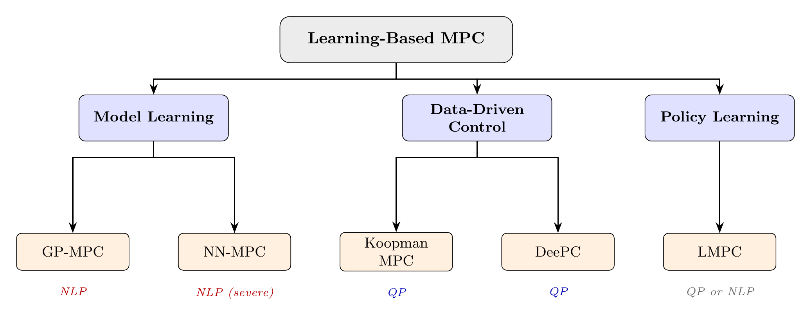
Suppose we have a nominal model \(x_{k+1} = Ax_k + Bu_k\) that captures the dominant dynamics, but the true system contains an additional unknown term: \[\begin{equation} \label{eq:residual_model} x_{k+1} = Ax_k + Bu_k + g(x_k, u_k) \end{equation}\] where \(g \colon \mathbb{R}^n \times \mathbb{R}^m \to \mathbb{R}^n\) is an unknown function representing unmodelled dynamics. The idea behind GP-MPC is to learn \(g\) from data as a Gaussian process—a probabilistic model that provides not only a best-guess prediction but also a measure of confidence. This confidence is then used to tighten the MPC constraints adaptively: more in regions where data is sparse and the model is uncertain, less where data is dense and the model is reliable.
A Gaussian process is a tool for learning an unknown function from noisy observations. The reader needs basic probability from Appendix B; in particular, the conditional multivariate Gaussian (Section [sec:app_cond_gauss]) is the mathematical foundation of GP prediction, and the chance-constraint conversion (Section [sec:app_chance_constraints]) is used for constraint tightening in Section 1.2.3.
We have \(T\) noisy observations of an unknown scalar function \(f\): \[y_i = f(x_i) + \varepsilon_i, \qquad \varepsilon_i \sim \mathcal{N}(0, \sigma_n^2), \qquad i = 1, \ldots, T\] where \(x_i\) is the input (which may be a vector), \(y_i\) is the observed output, and \(\varepsilon_i\) is independent Gaussian noise with variance \(\sigma_n^2\). Given these \(T\) pairs, we want to predict \(f(x_*)\) at a new test point \(x_*\).
A parametric model (e.g. a polynomial) commits to a fixed functional form and learns its coefficients. A Gaussian process takes a different approach: it places a probability distribution directly over functions.
Definition: Gaussian Process A Gaussian process (GP) is a collection of random variables, any finite subset of which has a joint Gaussian distribution. A GP is fully specified by its mean function \(m(x)\) and covariance function (or kernel) \(k(x, x')\): \[f \sim \mathcal{GP}\bigl(m(x),\; k(x, x')\bigr)\] For any finite set of inputs \(\{x_1, \ldots, x_T\}\), the function values \([f(x_1), \ldots, f(x_T)]^\top\) are jointly Gaussian with mean \([m(x_1), \ldots, m(x_T)]^\top\) and covariance matrix \(K_{ij} = k(x_i, x_j)\).
We typically set \(m(x) = 0\) (the prior mean is zero, meaning no prior bias), so that all structure in the function is captured by the kernel \(k(x, x')\).
The kernel encodes our assumptions about the unknown function: how smooth it is, how fast it varies, and over what length scales. The most common choice is the squared exponential (SE) kernel: \[\begin{equation} \label{eq:se_kernel} k(x, x') = \sigma_f^2 \exp\!\left(-\frac{\|x - x'\|^2}{2\ell^2}\right) \end{equation}\] This kernel has two hyperparameters:
\(\sigma_f^2\) (signal variance): controls the overall amplitude of the function. Larger \(\sigma_f\) allows the function to take larger values.
\(\ell\) (length scale): controls how quickly the function can change. A small \(\ell\) permits rapid variation; a large \(\ell\) enforces smooth, slowly varying behaviour.
When two inputs \(x\) and \(x'\) are close (\(\|x - x'\| \ll \ell\)), the kernel is close to \(\sigma_f^2\), meaning the function values are highly correlated. When they are far apart (\(\|x - x'\| \gg \ell\)), the kernel approaches zero and the function values are nearly independent.
Given training inputs \(\{x_1, \ldots, x_T\}\), observations \(y = [y_1, \ldots, y_T]^\top\), and a test point \(x_*\), the GP posterior is Gaussian with: \[\begin{align} \mu_*(x_*) &= k_*^\top \bigl(K + \sigma_n^2 I\bigr)^{-1} y \label{eq:gp_mean} \\[4pt] \sigma_*^2(x_*) &= k(x_*, x_*) - k_*^\top \bigl(K + \sigma_n^2 I\bigr)^{-1} k_* \label{eq:gp_var} \end{align}\] where:
\(K \in \mathbb{R}^{T \times T}\) is the Gram matrix with entries \(K_{ij} = k(x_i, x_j)\).
\(k_* = [k(x_*, x_1), \ldots, k(x_*, x_T)]^\top \in \mathbb{R}^T\) is the vector of kernel evaluations between the test point and all training points.
\(\sigma_n^2\) is the noise variance.
GP Prediction Recipe Given training data \(\{(x_i, y_i)\}_{i=1}^T\) and a test input \(x_*\):
Build the Gram matrix \(K\) and the test kernel vector \(k_*\).
Compute \(\alpha = (K + \sigma_n^2 I)^{-1}y\) (solve a linear system—do not invert the matrix explicitly).
The predicted mean is \(\mu_* = k_*^\top \alpha\).
The predicted variance is \(\sigma_*^2 = k(x_*,x_*) - k_*^\top (K + \sigma_n^2 I)^{-1}k_*\).
The mean \(\mu_*\) is the best prediction. The interval \(\mu_* \pm 2\sigma_*\) is a 95% confidence band.
GP Regression on a Scalar Function We observe 10 noisy samples from \(f(x) = \sin(x)\) on the interval \([0, 2\pi]\): \[y_i = \sin(x_i) + \varepsilon_i, \qquad \varepsilon_i \sim \mathcal{N}(0, 0.04), \qquad i = 1, \ldots, 10\] We use the SE kernel [eq:se_kernel] with \(\sigma_f = 1\), \(\ell = 1\), and \(\sigma_n = 0.2\).
For a test point \(x_* = 1.5\):
Compute the \(10 \times 10\) Gram matrix \(K\) using \(k(x_i, x_j) = \exp\bigl(-\frac{(x_i - x_j)^2}{2}\bigr)\).
Compute \(k_* \in \mathbb{R}^{10}\), where each entry is \(k(1.5, x_i)\).
Solve the linear system \((K + 0.04\,I)\,\alpha = y\).
The predicted mean is \(\mu_* = k_*^\top \alpha\).
The predicted variance is \(\sigma_*^2 = 1 - k_*^\top (K + 0.04\,I)^{-1}k_*\).
The resulting mean \(\mu_*\) will be close to \(\sin(1.5) \approx 0.997\), and the variance \(\sigma_*^2\) will be small because \(x_* = 1.5\) is close to several training points. In regions far from any training data, the variance grows, reflecting genuine uncertainty.
The following MATLAB script implements this example.
rng(42);
T = 10;
X = sort(2*pi*rand(T,1));
sn = 0.2;
y = sin(X) + sn*randn(T,1);
% 2. Kernel Hyperparameters
sf = 1; ell = 1; sn2 = sn^2;
% 3. Kernel Function
kSE = @(xa,xb) sf^2*exp(-0.5*(xa-xb').^2/ell^2);
% 4. Gram Matrix and Alpha
K = kSE(X, X);
alpha = (K + sn2*eye(T)) \ y;
% 5. Predictions on a Dense Grid
Xstar = linspace(0, 2*pi, 200)';
Kstar = kSE(Xstar, X);
Kss = kSE(Xstar, Xstar);
mu = Kstar * alpha;
V = Kss - Kstar * ((K + sn2*eye(T)) \ Kstar');
sig = sqrt(diag(V));
% 6. Plot
figure; hold on;
fill([Xstar; flipud(Xstar)], ...
[mu+2*sig; flipud(mu-2*sig)], ...
[0.8 0.9 1], 'EdgeColor','none');
plot(Xstar, mu, 'b-', 'LineWidth', 2);
plot(X, y, 'ko', 'MarkerFaceColor','k', 'MarkerSize', 6);
plot(Xstar, sin(Xstar), 'r--', 'LineWidth', 1.5);
xlabel('x'); ylabel('f(x)');
legend('95\% confidence', 'GP mean', 'Data', 'True f(x)');
title('GP Regression'); hold off;The result of this code is shown in Figure 1.2. The GP mean (blue) closely tracks the true function \(\sin(x)\) (red dashed) near the training points, while the \(\pm 2\sigma\) confidence band (shaded blue) widens in regions where data is sparse—precisely where prediction uncertainty is greatest.
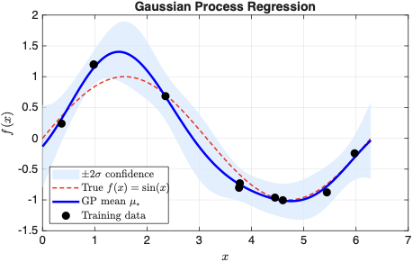
The code below implements GP regression from scratch using only NumPy. Modify the training data, kernel parameters, or noise level and click Run.
# Gaussian Process regression from scratch
np.random.seed(42)
# Training data: noisy observations of sin(x)
X_train = np.sort(np.random.uniform(-5, 5, 15))
y_train = np.sin(X_train) + 0.1 * np.random.randn(len(X_train))
# Kernel parameters (try changing these!)
sigma_f = 1.0 # signal variance
ell = 1.0 # length scale
sigma_n = 0.1 # noise standard deviation
# Squared exponential kernel
def kernel(x1, x2):
return sigma_f**2 * np.exp(-0.5 * (x1[:, None] - x2[None, :])**2 / ell**2)
# GP prediction
K = kernel(X_train, X_train) + sigma_n**2 * np.eye(len(X_train))
K_inv = np.linalg.solve(K, np.eye(len(X_train)))
X_test = np.linspace(-6, 6, 100)
k_star = kernel(X_train, X_test)
# Mean and variance predictions
mu = k_star.T @ K_inv @ y_train
var = sigma_f**2 - np.diag(k_star.T @ K_inv @ k_star)
std = np.sqrt(np.maximum(var, 0))
# Print summary
print("GP Regression Results:")
print(f" Training points: {len(X_train)}")
print(f" Kernel: SE(sigma_f={sigma_f}, ell={ell})")
print(f" Max std (uncertainty): {np.max(std):.3f}")
print(f" Min std (near data): {np.min(std):.3f}")
print(f" RMSE vs true sin(x): {np.sqrt(np.mean((mu - np.sin(X_test))**2)):.4f}")
print(f"\nAt x=0.0: mu={mu[50]:.3f}, +/-2*sigma=[{mu[50]-2*std[50]:.3f}, {mu[50]+2*std[50]:.3f}]")
print(f"At x=5.5: mu={mu[96]:.3f}, +/-2*sigma=[{mu[96]-2*std[96]:.3f}, {mu[96]+2*std[96]:.3f}] (extrapolation)")
Returning to the residual model [eq:residual_model], suppose we have collected \(T\) state transitions from the real plant: \[\{(x_k, u_k, x_{k+1})\}_{k=0}^{T-1}\] The residual at each time step is: \[\begin{equation} \label{eq:residual_data} r_k = x_{k+1} - Ax_k - Bu_k \end{equation}\] This is the part of the dynamics the nominal model fails to explain. Each \(r_k\) is a noisy observation of \(g(x_k, u_k)\).
For a system with \(n\) states, \(g\) maps \(\mathbb{R}^{n+m}\) to \(\mathbb{R}^n\). We fit one independent GP per state dimension: the \(i\)th GP is trained on inputs \(\{(x_k, u_k)\}\) and outputs \(\{r_{k,i}\}\), where \(r_{k,i}\) is the \(i\)th component of \(r_k\).
After training, given a current state \(x\) and input \(u\), the GP provides: \[\begin{align*} \text{Predicted next state:} \quad & \hat{x}_{k+1} = Ax_k + Bu_k + \mu_g(x_k, u_k) \\ \text{Prediction uncertainty:} \quad & \Sigma_{k+1} = \text{diag}\bigl(\sigma_{g,1}^2(x_k, u_k), \ldots, \sigma_{g,n}^2(x_k, u_k)\bigr) \end{align*}\] where \(\mu_g\) and \(\Sigma_{k+1}\) are assembled from the individual GP predictions.
Computational Complexity GP prediction requires solving a \(T \times T\) linear system, which scales as \(O(T^3)\). For small to moderate datasets (\(T < 500\)), this is fast. For larger datasets, sparse GP approximations using inducing points reduce the cost to \(O(TM^2)\), where \(M \ll T\) is the number of inducing points. For the examples in these notes, exact GP inference is sufficient.
Figure 1.3 illustrates this process for the worked example in Section 1.2.4: the GP learns the unknown cubic drag \(g(x) = -0.2\,x^3\) from 20 residual data points. The confidence band is narrow where data is concentrated and widens at the extremes.
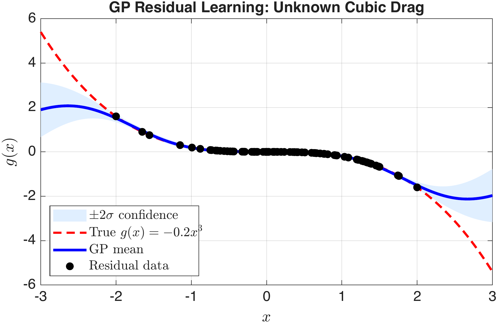
At each time step, the GP-enhanced model predicts the mean trajectory and the state-dependent uncertainty. This uncertainty is exploited through chance constraints: instead of requiring that constraints hold with certainty (which would require worst-case reasoning as in Tube MPC), we require that they hold with a specified probability \(1 - \delta\).
For each state dimension \(i\) and each prediction step \(k\), the state constraint \(x_{k,i} \le x_{\max,i}\) becomes: \[\begin{equation} \label{eq:chance_constraint} \Pr\bigl(x_{k,i} \le x_{\max,i}\bigr) \ge 1 - \delta \end{equation}\] For a single prediction step, if the GP prediction is Gaussian, this is equivalent to a deterministic tightened constraint: \[\begin{equation} \label{eq:tightened_chance} \boxed{\mu_{k,i} + \Phi^{-1}(1-\delta)\;\sigma_{k,i} \le x_{\max,i}} \end{equation}\] where \(\Phi^{-1}\) is the inverse of the standard normal CDF (e.g. \(\Phi^{-1}(0.95) \approx 1.645\) for a 95% constraint, \(\Phi^{-1}(0.975) \approx 1.96\) for 97.5%).
Multi-Step Validity The Gaussian tightening [eq:tightened_chance] is exact at the first prediction step (\(k=1\)), because the one-step GP prediction is Gaussian by construction. For \(k > 1\), the predicted state distribution is obtained by propagating through the nonlinear GP mean, which destroys the Gaussian structure. In practice, the formula is applied at every horizon step as a tractable approximation—evaluating the GP variance at the current nominal trajectory rather than propagating uncertainty forward. This “certainty-equivalent” approach works well when the GP variance is small, but does not provide formal multi-step chance constraint guarantees.
Chance Constraint Tightening via GP Variance The GP variance \(\sigma_{k,i}^2\) acts as a state-dependent safety margin. In regions with little training data, \(\sigma_{k,i}\) is large, and the constraint is tightened aggressively. In well-explored regions, \(\sigma_{k,i}\) is small, and the constraint is barely tightened.
Connection to Tube MPC Tube MPC (previous chapter) tightens constraints by a fixed amount \(\mathcal{E}\), determined by the worst-case disturbance bound \(\mathcal{W}\). GP-MPC tightens constraints adaptively: more where data is sparse (high variance), less where data is dense (low variance). As more data is collected, the GP variance shrinks everywhere, and the tightening approaches zero—the controller recovers the full feasible region.
The GP-MPC optimisation at time \(t\) is: \[\begin{equation} \label{eq:gpmpc_opt} \min_{u_0, \ldots, u_{N-1}} \; \sum_{k=0}^{N-1}\bigl(\mu_{x_k}^\top Q\,\mu_{x_k} + u_k^\top R\,u_k\bigr) + \mu_{x_N}^\top P\,\mu_{x_N} \end{equation}\] subject to: \[\begin{align*} \text{Initialisation:} \quad & \mu_{x_0} = x(t) \\ \text{Learned dynamics:} \quad & \mu_{x_{k+1}} = A\,\mu_{x_k} + B\,u_k + \mu_g(\mu_{x_k}, u_k) \\ \text{Chance constraints:} \quad & \mu_{x_{k,i}} + \Phi^{-1}(1-\delta)\,\sigma_{x_{k,i}} \le x_{\max,i} \\ & \mu_{x_{k,i}} - \Phi^{-1}(1-\delta)\,\sigma_{x_{k,i}} \ge x_{\min,i} \\ \text{Actuator limits:} \quad & u_{\min} \le u_k \le u_{\max} \end{align*}\] for \(k = 0, \ldots, N-1\) and \(i = 1, \ldots, n\). The terminal cost \(P\) is computed from the DARE applied to the nominal \((A, B)\).
GP-MPC: Learning an Unknown Cubic Drag System. The true plant is a scalar system with a nonlinear drag term: \[x_{k+1} = x_k + u_k - 0.2\,x_k^3\] The cubic term \(-0.2\,x_k^3\) is unknown to the controller.
Nominal model. The controller uses a pure integrator: \(x_{k+1} = x_k + u_k\), i.e. \(A = 1\), \(B = 1\).
Constraints. \(|u_k| \le 1\), \(|x_k| \le 3\).
Objective. Regulate to the origin from \(x_0 = 2.5\) with \(Q = 1\), \(R = 0.1\), \(N = 10\).
Step 1: Data collection. We excite the system with 20 random inputs from \(u \sim \mathcal{U}(-1, 1)\) starting from \(x_0 = 0\), and record the transitions.
Step 2: Compute residuals. For each transition, \(r_k = x_{k+1} - x_k - u_k\). These residuals are noisy observations of \(g(x_k) = -0.2\,x_k^3\).
Step 3: Train GP. Fit a GP with SE kernel to the residual data. The GP learns \(g(x)\) along with pointwise confidence.
Step 4: GP-MPC loop. At each step:
Query the GP at the current predicted states to obtain \(\mu_g\) and \(\sigma_g\).
Formulate the MPC with tightened constraints: \(\mu_{x_k} + 1.96\,\sigma_{x_k} \le 3\) and \(\mu_{x_k} - 1.96\,\sigma_{x_k} \ge -3\).
Solve the resulting NLP—or, more commonly, the QP approximation obtained by evaluating the GP at the current nominal trajectory (successive linearisation). Apply \(u_0^*\), measure \(x_{k+1}\), and optionally append the new data point to the GP training set.
A_nom = 1; B_nom = 1;
f_true = @(x, u) x + u - 0.2*x^3;
% 2. Data Collection (random excitation)
rng(0);
T_data = 20;
x_data = zeros(T_data+1, 1);
u_data = 2*rand(T_data, 1) - 1;
for k = 1:T_data
x_data(k+1) = f_true(x_data(k), u_data(k));
end
X_train = x_data(1:T_data);
r_train = x_data(2:T_data+1) - A_nom*x_data(1:T_data) ...
- B_nom*u_data;
% 3. GP Training (SE kernel)
sf = 0.5; ell = 1.0; sn2 = 0.01;
kSE = @(xa, xb) sf^2*exp(-0.5*(xa - xb').^2 / ell^2);
K_gp = kSE(X_train, X_train) + sn2*eye(T_data);
alpha_gp = K_gp \ r_train;
gp_mean = @(xs) kSE(xs, X_train) * alpha_gp;
gp_var = @(xs) sf^2 - diag(kSE(xs, X_train) ...
* (K_gp \ kSE(X_train, xs)));
% 4. GP-MPC Simulation
N = 10; Q = 1; R = 0.1; P = dare(A_nom, B_nom, Q, R);
x_max = 3; u_max = 1; delta = 0.025;
kappa = norminv(1 - delta); % 1.96 for 97.5%
T_sim = 30;
x_hist = zeros(1, T_sim+1); x_hist(1) = 2.5;
u_hist = zeros(1, T_sim);
for t = 1:T_sim
x_now = x_hist(t);
% Successive linearisation: evaluate GP at nominal trajectory
x_nom = zeros(1, N+1); x_nom(1) = x_now;
mu_nom = zeros(1, N); sig_nom = zeros(1, N);
for k = 1:N
mu_nom(k) = gp_mean(x_nom(k));
sig_nom(k) = sqrt(max(gp_var(x_nom(k)), 1e-6));
x_nom(k+1) = A_nom*x_nom(k) + B_nom*0 + mu_nom(k); % u=0 nominal
% Simplification: a production implementation would use the previous MPC solution
end
% Build QP with GP evaluated at nominal (fixed, not decision vars)
u_var = sdpvar(1, N);
x_var = sdpvar(1, N+1);
con = [x_var(1) == x_now];
obj = 0;
for k = 1:N
con = [con, x_var(k+1) == A_nom*x_var(k) + B_nom*u_var(k) + mu_nom(k)];
con = [con, -u_max <= u_var(k) <= u_max];
con = [con, -x_max + kappa*sig_nom(k) <= x_var(k+1) <= x_max - kappa*sig_nom(k)];
obj = obj + Q*x_var(k)^2 + R*u_var(k)^2;
end
obj = obj + P*x_var(N+1)^2;
opts = sdpsettings('verbose', 0, 'solver', 'quadprog');
optimize(con, obj, opts);
u_hist(t) = value(u_var(1));
x_hist(t+1) = f_true(x_hist(t), u_hist(t));
endComputational note The code above calls
optimize inside the loop, rebuilding the YALMIP problem at
every time step. This is acceptable for a small demonstration but very
slow in practice. For real applications, reformulate the problem using
YALMIP’s optimizer object with the GP-derived tightening
values as additional parameters.
% 5. Plot Results
figure;
subplot(2,1,1); stairs(0:T_sim-1, u_hist, 'b', 'LineWidth', 2);
yline(u_max, 'r--', 'LineWidth', 1.5); yline(-u_max, 'r--', 'LineWidth', 1.5);
ylabel('u_k'); title('GP-MPC: Control Input'); grid on;
subplot(2,1,2); plot(0:T_sim, x_hist, 'b', 'LineWidth', 2);
yline(x_max, 'r--', 'LineWidth', 1.5); yline(-x_max, 'r--', 'LineWidth', 1.5);
ylabel('x_k'); xlabel('Time step k'); title('GP-MPC: State'); grid on;GP-MPC Design Recipe
Collect trajectory data from the real system under exploratory excitation.
Compute residuals \(r_k = x_{k+1} - Ax_k - Bu_k\) and train a GP (one per state dimension).
At each MPC step, query the GP for the predicted residual mean \(\mu_g\) and variance \(\sigma_g^2\).
Tighten the state constraints using [eq:tightened_chance]: \(\mu_{k,i} + \kappa\,\sigma_{k,i} \le x_{\max,i}\), where \(\kappa = \Phi^{-1}(1-\delta)\).
Solve the resulting optimisation (an NLP in general; a QP if the GP is evaluated at the nominal trajectory). Apply \(u_0^*\) and optionally update the GP with the new measurement.
The closed-loop result of the GP-MPC controller is shown in Figure 1.4. Compared to the nominal controller (which ignores the cubic drag), GP-MPC achieves faster regulation and avoids the oscillatory behaviour caused by model mismatch.
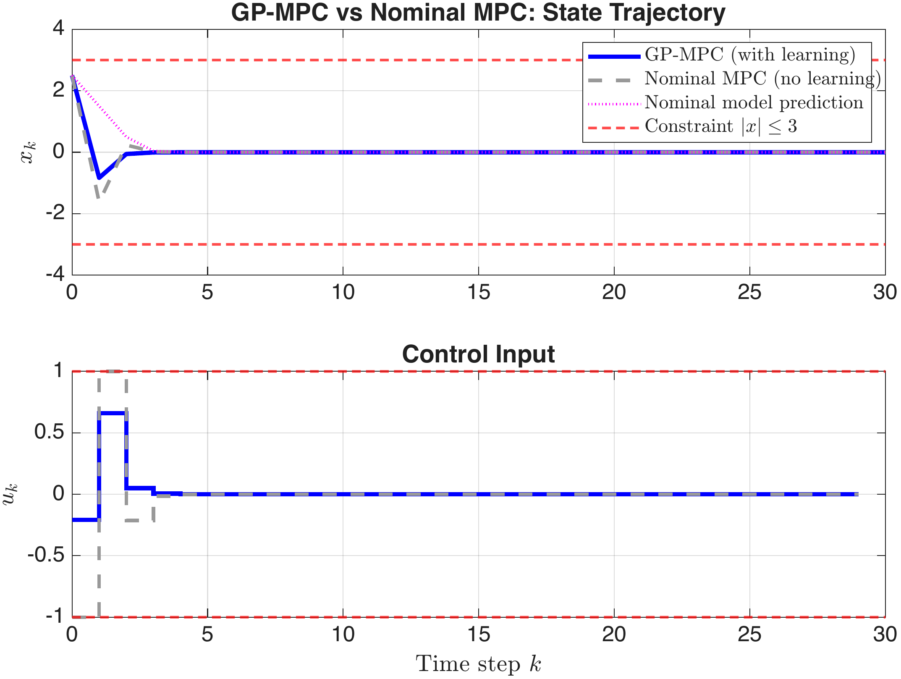
Figure 1.5 shows the GP-MPC control architecture as a block diagram. The GP model sits alongside the nominal model and feeds both the predicted mean and the predicted variance into the MPC optimisation.
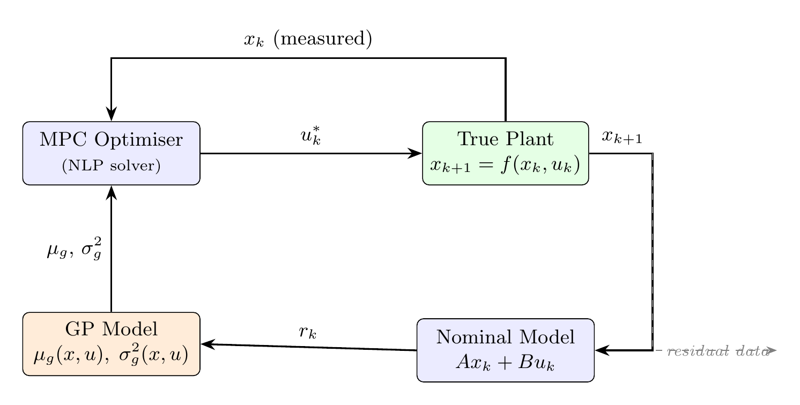
The GP-MPC approach learns a nonlinear correction to a known model. The Koopman approach takes a fundamentally different route: it transforms the entire nonlinear system into a linear one by working in a higher-dimensional space. Once the system is linear, the standard MPC machinery from Chapter 7—quadratic cost, linear constraints, QP solver—applies directly.
Consider an autonomous nonlinear system: \[x_{k+1} = f(x_k), \qquad x_k \in \mathbb{R}^n\] The state evolves in \(\mathbb{R}^n\) according to the possibly complicated function \(f\). Instead of tracking the state directly, consider tracking functions of the state.
An observable is any scalar function \(\psi \colon \mathbb{R}^n \to \mathbb{R}\). For instance, \(\psi(x) = x_1^2 + x_2\) is an observable. If we know \(x_k\), we can compute \(\psi(x_k)\). One time step later, \(\psi\) takes the value \(\psi(x_{k+1}) = \psi(f(x_k))\).
Definition: The Koopman Operator The Koopman operator \(\mathcal{K}\) acts on observables: \[(\mathcal{K}\psi)(x) = \psi\bigl(f(x)\bigr)\] It advances any observable one time step forward along the trajectories of \(f\). The crucial property is that \(\mathcal{K}\) is linear: \(\mathcal{K}(\alpha\psi_1 + \beta\psi_2) = \alpha\,\mathcal{K}\psi_1 + \beta\,\mathcal{K}\psi_2\), even when \(f\) is nonlinear. The trade-off is that \(\mathcal{K}\) acts on a space of functions, which is infinite-dimensional.
In other words, nonlinear dynamics of states become linear dynamics of observables. If we could find a finite set of observables closed under the action of \(\mathcal{K}\), we would have an exact finite-dimensional linear representation of the nonlinear system. For most nonlinear systems, no such finite set exists—but a well-chosen finite dictionary can still produce an accurate approximation.
In practice, we choose a dictionary of \(p\) observables: \[\Psi(x) = \begin{bmatrix} \psi_1(x) \\ \psi_2(x) \\ \vdots \\ \psi_p(x) \end{bmatrix} \in \mathbb{R}^p\] Common choices include monomials (\(x_1\), \(x_2\), \(x_1^2\), \(x_1 x_2\), \(x_2^2\), …), radial basis functions, or trigonometric functions. The lifted state is \(z_k = \Psi(x_k) \in \mathbb{R}^p\), with \(p \ge n\). The first \(n\) entries are typically chosen to be the original states: \(\psi_i(x) = x_i\) for \(i = 1, \ldots, n\).
We then seek a matrix \(K_d \in \mathbb{R}^{p \times p}\) (we write \(K_d\) to distinguish it from the feedback gain \(K\) used elsewhere in these notes) such that: \[\begin{equation} \label{eq:koopman_approx} z_{k+1} = \Psi(x_{k+1}) \approx K_d\,z_k = K_d\,\Psi(x_k) \end{equation}\] This is a linear dynamical system in the lifted coordinates \(z_k\). The nonlinearity of \(f\) is absorbed into the choice of dictionary \(\Psi\).
Dictionary Choice The quality of the approximation [eq:koopman_approx] depends entirely on the dictionary \(\Psi\). A poor dictionary produces a poor linear model. Common strategies:
Monomials up to a chosen degree (simple, intuitive, but the number of terms grows combinatorially).
Radial basis functions centred at representative states.
Domain knowledge: if the nonlinearity involves \(x^3\), include \(x^3\) in the dictionary.
There is no universal recipe; choosing a good dictionary remains an open research question.
EDMD is the standard method for computing the Koopman approximation from data. For a system with control inputs, the dynamics are \(x_{k+1} = f(x_k, u_k)\), and the lifted linear model becomes: \[\begin{equation} \label{eq:koopman_controlled} z_{k+1} \approx A_K\,z_k + B_K\,u_k \end{equation}\]
Collect a trajectory of \(T\) state transitions: \[\{(x_0, u_0, x_1),\; (x_1, u_1, x_2),\; \ldots,\; (x_{T-2}, u_{T-2}, x_{T-1})\}\] Apply the dictionary \(\Psi\) to each state: \[\begin{align*} Z &= \bigl[\Psi(x_0) \;\; \Psi(x_1) \;\; \cdots \;\; \Psi(x_{T-2})\bigr] \in \mathbb{R}^{p \times (T-1)} \\ Z' &= \bigl[\Psi(x_1) \;\; \Psi(x_2) \;\; \cdots \;\; \Psi(x_{T-1})\bigr] \in \mathbb{R}^{p \times (T-1)} \\ U &= \bigl[u_0 \;\; u_1 \;\; \cdots \;\; u_{T-2}\bigr] \in \mathbb{R}^{m \times (T-1)} \end{align*}\]
The matrices \(A_K\) and \(B_K\) are found by solving the least-squares problem: \[\begin{equation} \label{eq:edmd_ls} \bigl[A_K \;\; B_K\bigr] = Z' \begin{bmatrix} Z \\ U \end{bmatrix}^\dagger \end{equation}\] where \(\dagger\) denotes the Moore–Penrose pseudoinverse. This minimises \(\sum_{k} \|\Psi(x_{k+1}) - A_K\Psi(x_k) - B_K u_k\|^2\).
Hand-Worked EDMD for a Scalar Nonlinear System System. \(x_{k+1} = 0.9\,x_k + 0.1\,x_k^2 + u_k\).
Dictionary. \(\Psi(x) = [x, \; x^2]^\top\) (two lifted states, \(p = 2\)).
We collect 5 transitions from \(x_0 = 1\) with inputs \(u = [0.1,\; -0.2,\; 0.3,\; -0.1,\; 0.0]\): \[\begin{array}{c|c|c} k & x_k & u_k \\ \hline 0 & 1.000 & 0.100 \\ 1 & 1.100 & -0.200 \\ 2 & 0.911 & 0.300 \\ 3 & 1.203 & -0.100 \\ 4 & 1.127 & 0.000 \end{array}\] where \(x_1 = 0.9(1) + 0.1(1)^2 + 0.1 = 1.1\), etc.
Step 1: Lift the data. \[Z = \begin{bmatrix} 1.000 & 1.100 & 0.911 & 1.203 \\ 1.000 & 1.210 & 0.830 & 1.447 \end{bmatrix}, \quad Z' = \begin{bmatrix} 1.100 & 0.911 & 1.203 & 1.127 \\ 1.210 & 0.830 & 1.447 & 1.270 \end{bmatrix}\] \[U = \begin{bmatrix} 0.1 & -0.2 & 0.3 & -0.1 \end{bmatrix}\]
Step 2: Solve. Form the stacked matrix \(\Omega = [Z;\; U] \in \mathbb{R}^{3 \times 4}\) and compute: \[[A_K \;\; B_K] = Z'\,\Omega^\dagger\] This yields \(A_K \in \mathbb{R}^{2 \times 2}\) and \(B_K \in \mathbb{R}^{2 \times 1}\). The resulting \(A_K\) captures both the linear and quadratic dynamics in a single linear system.
Step 3: Verify. At \(x = 1.5\) with \(u = 0\):
True: \(x^+ = 0.9(1.5) + 0.1(1.5)^2 = 1.575\)
Koopman: \(z^+ = A_K [1.5,\; 2.25]^\top + B_K \cdot 0\), then extract the first component.
The predictions should be close, confirming the dictionary captures the quadratic nonlinearity.
The following MATLAB code performs EDMD identification and compares the Koopman prediction to the true dynamics.
f_true = @(x, u) 0.9*x + 0.1*x.^2 + u;
% 2. Data Collection
rng(1);
T = 50;
x_data = zeros(T+1, 1); x_data(1) = 0;
u_data = 0.5*randn(T, 1);
for k = 1:T
x_data(k+1) = f_true(x_data(k), u_data(k));
end
% 3. Dictionary: Psi(x) = [x; x^2]
Psi = @(x) [x; x.^2];
p = 2; % lifted dimension
Z = zeros(p, T); Zp = zeros(p, T);
for k = 1:T
Z(:,k) = Psi(x_data(k));
Zp(:,k) = Psi(x_data(k+1));
end
U = u_data(1:T)';
% 4. EDMD: Solve [A_K, B_K] = Zp * [Z; U]'
Omega = [Z; U];
AB = Zp * pinv(Omega);
A_K = AB(:, 1:p);
B_K = AB(:, p+1:end);
% 5. Verify: One-Step Prediction
x_test = linspace(-2, 2, 100);
x_true = f_true(x_test, 0);
x_koop = zeros(1, 100);
for i = 1:100
z_next = A_K * Psi(x_test(i)) + B_K * 0;
x_koop(i) = z_next(1); % extract first component
end
figure; plot(x_test, x_true, 'r-', 'LineWidth', 2); hold on;
plot(x_test, x_koop, 'b--', 'LineWidth', 2);
xlabel('x_k'); ylabel('x_{k+1}');
legend('True dynamics', 'Koopman (EDMD)');
title('EDMD One-Step Prediction (u = 0)'); grid on;Figure 1.6 compares the Koopman predictor to the true dynamics. The Koopman model (blue dashed) captures the quadratic nonlinearity accurately, while the linearisation about the origin (grey dotted) diverges significantly for \(|x| > 1\).
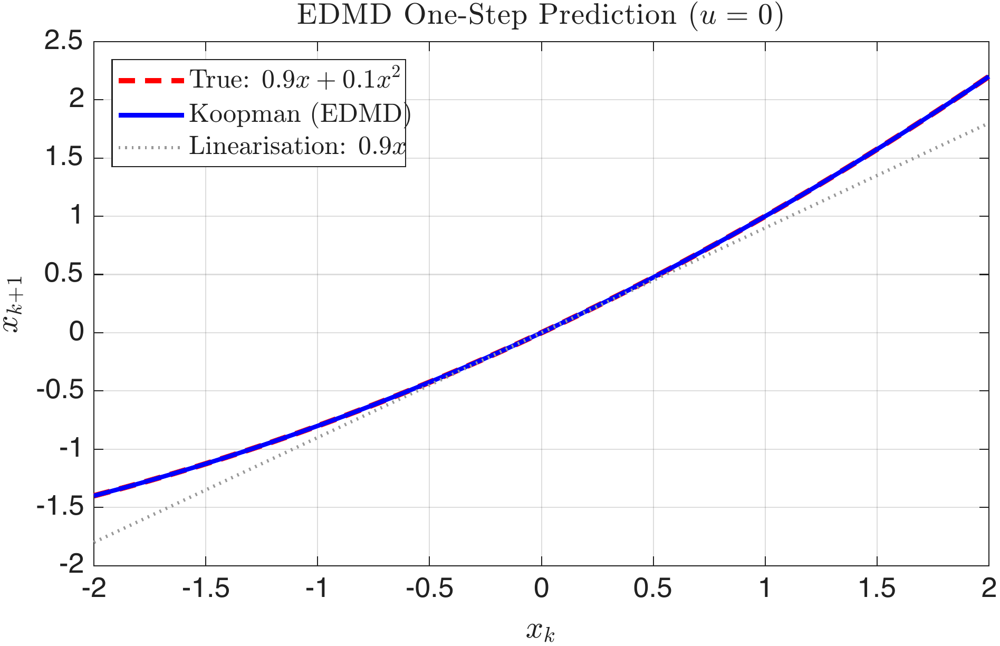
With the identified matrices \((A_K, B_K)\), we formulate a standard linear MPC in the lifted coordinates. The optimisation is identical in structure to the one in Chapter 7—it is a QP.
Let \(C_x \in \mathbb{R}^{n \times p}\) be the matrix that extracts the original states from the lifted state, i.e. \(x_k = C_x\,z_k\). Since we chose \(\psi_i(x) = x_i\) for \(i = 1, \ldots, n\), we simply have \(C_x = [I_n \;\; 0]\).
The cost matrices in lifted space are: \[\tilde{Q} = C_x^\top Q\,C_x\] The terminal cost \(\tilde{P}\) is obtained by solving the DARE for the lifted system: \(\tilde{P}\) is the stabilising solution of the discrete algebraic Riccati equation with \((A_K, B_K, \tilde{Q}, R)\).
The Koopman MPC problem at time \(t\) is: \[\begin{equation} \label{eq:koopman_mpc} \min_{u_0, \ldots, u_{N-1}} \; \sum_{k=0}^{N-1}\bigl(z_k^\top \tilde{Q}\,z_k + u_k^\top R\,u_k\bigr) + z_N^\top \tilde{P}\,z_N \end{equation}\] subject to: \[\begin{align*} \text{Initialisation:} \quad & z_0 = \Psi\bigl(x(t)\bigr) \\ \text{Lifted dynamics:} \quad & z_{k+1} = A_K\,z_k + B_K\,u_k \\ \text{State constraints:} \quad & x_{\min} \le C_x\,z_k \le x_{\max} \\ \text{Actuator limits:} \quad & u_{\min} \le u_k \le u_{\max} \end{align*}\]
Reusing the Linear MPC Machinery The Koopman MPC problem [eq:koopman_mpc] is a standard QP. The YALMIP implementation from Chapter 7 can be reused with minimal changes: replace \(A\) with \(A_K\), \(B\) with \(B_K\), \(x_k\) with \(z_k\), and adjust the cost matrices. The stability theory from Chapter 7—terminal cost, terminal set, recursive feasibility—applies to the identified Koopman model. Whether these guarantees transfer to the true nonlinear system depends on the accuracy of the dictionary approximation: a poor dictionary may produce a model whose predictions diverge from the true dynamics, invalidating the stability argument.
Koopman MPC for a Nonlinear Oscillator System. A Duffing oscillator discretised with RK4 at sampling time \(T_s = 0.2\): \[\begin{align*} \dot{x}_1 &= x_2, \qquad \dot{x}_2 = -x_1 - 3\,x_1^3 - 0.3\,x_2 + u \end{align*}\] The strong cubic stiffness (\(\beta = 3\)) makes this system heavily nonlinear for \(|x_1| > 1\).
Dictionary. \(\Psi(x) = [x_1,\; x_2,\; x_1^2,\; x_2^2,\; x_1 x_2]^\top\) (\(p = 5\) lifted states).
Constraints. \(|u_k| \le 2\), \(|x_{1,k}| \le 5\) (soft).
Objective. Regulate from \(x_0 = [3;\; 0]\) to the origin with \(Q = \text{diag}(10, 1)\), \(R = 0.1\), \(N = 10\).
We collect 1440 data points from 12 diverse initial conditions with random excitation, identify \((A_K, B_K)\) via EDMD, and compare Koopman MPC against linearised MPC using YALMIP. Both controllers use identical MPC formulations; only the prediction model differs.
Ts = 0.2; alpha = 1; beta = 3; delta = 0.3;
f_cont = @(x,u) [x(2); -alpha*x(1)-beta*x(1)^3-delta*x(2)+u];
rk4 = @(x,u) rk4_step(f_cont, x, u, Ts);
% Linearisation at origin (numerical Jacobian of RK4 map)
eps_j = 1e-6;
A_lin = zeros(2);
for j = 1:2
xp = zeros(2,1); xp(j) = eps_j;
xm = zeros(2,1); xm(j) = -eps_j;
A_lin(:,j) = (rk4(xp,0)-rk4(xm,0))/(2*eps_j);
end
B_lin = (rk4(zeros(2,1),eps_j)-rk4(zeros(2,1),-eps_j))/(2*eps_j);
% 2. Data Collection (diverse ICs for broad coverage)
rng(42); nx = 2;
ics = [2 0;-2 0;0 2;0 -2;1.5 1;-1 -1.5;2.5 -1;-2.5 1;
1 1;-1 1;3 0;-3 0]';
X_all=[]; Xp_all=[]; U_all=[];
for b = 1:size(ics,2)
x = ics(:,b);
for k = 1:120
u = 2.5*randn; xn = rk4(x, u);
if any(abs(xn)>10), xn = 0.3*randn(2,1); end
X_all=[X_all,x]; Xp_all=[Xp_all,xn]; U_all=[U_all,u];
x = xn;
end
end
% 3. EDMD Identification
Psi = @(x) [x(1);x(2);x(1)^2;x(2)^2;x(1)*x(2)];
p = 5; Z = zeros(p,size(X_all,2)); Zp = Z;
for k = 1:size(X_all,2)
Z(:,k) = Psi(X_all(:,k)); Zp(:,k) = Psi(Xp_all(:,k));
end
AB = Zp * pinv([Z; U_all]);
A_K = AB(:,1:p); B_K = AB(:,p+1:end);
Cx = [eye(nx), zeros(nx,p-nx)];
% 4. Build Koopman MPC and Linearised MPC (both via YALMIP)
Q = diag([10,1]); R = 0.1; N = 10;
u_max = 2; x1_max = 5; lam_s = 1e4;
opts = sdpsettings('verbose',0,'solver','quadprog');
Q_lift = Cx'*Q*Cx;
% Koopman MPC
z_par = sdpvar(p,1); uK = sdpvar(N,1); sK = sdpvar(N,1);
zp = cell(N+1,1); zp{1} = z_par;
for k = 1:N, zp{k+1} = A_K*zp{k} + B_K*uK(k); end
objK = 0; conK = [sK >= 0];
for k = 1:N
xk = Cx*zp{k+1};
objK = objK + xk'*Q*xk + R*uK(k)^2 + lam_s*sK(k)^2;
conK = [conK, -u_max<=uK(k)<=u_max];
conK = [conK, -x1_max-sK(k)<=xk(1)<=x1_max+sK(k)];
end
koopman_ctrl = optimizer(conK, objK, opts, z_par, uK(1));
% Linearised MPC (same structure, different model)
x_par = sdpvar(nx,1); uL = sdpvar(N,1); sL = sdpvar(N,1);
xp = cell(N+1,1); xp{1} = x_par;
for k = 1:N, xp{k+1} = A_lin*xp{k} + B_lin*uL(k); end
objL = 0; conL = [sL >= 0];
for k = 1:N
objL = objL + xp{k+1}'*Q*xp{k+1} + R*uL(k)^2 + lam_s*sL(k)^2;
conL = [conL, -u_max<=uL(k)<=u_max];
conL = [conL, -x1_max-sL(k)<=xp{k+1}(1)<=x1_max+sL(k)];
end
linear_ctrl = optimizer(conL, objL, opts, x_par, uL(1));
% 5. Closed-Loop Simulation
T_sim = 60; x0 = [3; 0];
xK = zeros(nx,T_sim+1); xK(:,1) = x0; uK_h = zeros(1,T_sim);
xL = zeros(nx,T_sim+1); xL(:,1) = x0; uL_h = zeros(1,T_sim);
for t = 1:T_sim
[uopt,~] = koopman_ctrl(Psi(xK(:,t)));
uK_h(t) = max(-u_max, min(u_max, full(uopt)));
xK(:,t+1) = rk4(xK(:,t), uK_h(t));
[uopt,~] = linear_ctrl(xL(:,t));
uL_h(t) = max(-u_max, min(u_max, full(uopt)));
xL(:,t+1) = rk4(xL(:,t), uL_h(t));
end
% Helper: RK4 step
function xn = rk4_step(f, x, u, h)
k1=f(x,u); k2=f(x+0.5*h*k1,u);
k3=f(x+0.5*h*k2,u); k4=f(x+h*k3,u);
xn = x + (h/6)*(k1+2*k2+2*k3+k4);
endFigure 1.7 compares the two controllers in closed loop. The key difference is visible from the very first time step: at \(x_0 = [3;\; 0]\), the linearised controller applies maximum negative input (\(u = -2\)) because it does not anticipate the strong cubic restoring force. The Koopman controller, which captures this nonlinearity through the lifted dictionary, applies a much smaller input (\(u \approx 0.2\)) — it knows the cubic stiffness will pull the state back. Over the full trajectory, Koopman MPC achieves approximately 11% lower cost and settles roughly 10 steps faster.
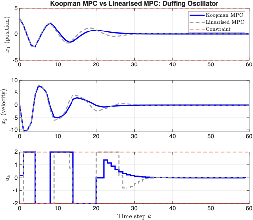
The demo below uses the cart-pole (an inverted pendulum mounted on a moving cart), which is a standard benchmark because the plant is nonlinear, underactuated, and open-loop unstable around the upright equilibrium. The state is \(x = [p,\; \dot{p},\; \theta,\; \dot{\theta}]^\top\), where \(p\) is the cart position and \(\theta = 0\) denotes the upright pole. The input \(u\) is the horizontal force applied to the cart.
In the demo, the physical parameters are chosen as cart mass \(m_c = 1.0\,\mathrm{kg}\), pole mass \(m_p = 0.3\,\mathrm{kg}\), pole half-length \(l = 0.5\,\mathrm{m}\), gravity \(g = 9.81\,\mathrm{m/s^2}\), sampling time \(T_s = 0.02\,\mathrm{s}\), control update period \(T_c = 0.04\,\mathrm{s}\), and input bound \(|u| \le 15\,\mathrm{N}\). With these parameters, the nonlinear dynamics are integrated in continuous time and sampled every control step:
\[ \dot{p} = \dot{p}, \qquad \ddot{p} = \frac{u + m_p l \bigl(\dot{\theta}^2 \sin\theta - \ddot{\theta}\cos\theta\bigr)}{m_c + m_p}, \]
\[ \dot{\theta} = \dot{\theta}, \qquad \ddot{\theta} = \frac{g\sin\theta\,(m_c+m_p) - \cos\theta\bigl(u + m_p l \dot{\theta}^2 \sin\theta\bigr)} {l\bigl(m_c + m_p - m_p\cos^2\theta\bigr)}. \]
The control objective is twofold: first, swing the pole from the hanging configuration toward the upright position, and second, stabilise the cart close to \(p = 0\) with small velocities. This is exactly the regime where a pure linear model in the original coordinates performs poorly, because the swing-up motion explores large angular excursions and strong trigonometric nonlinearities.
The Koopman idea is to lift the physical state into a richer observable space in which the dynamics are approximately linear. The dictionary used in the demo is
\[ \Psi(x) = \begin{bmatrix} p,\; \dot{p},\; \theta,\; \dot{\theta},\; \sin\theta,\; \cos\theta,\; \dot{p}\sin\theta,\; \dot{p}\cos\theta,\; \dot{\theta}\sin\theta,\; \dot{\theta}\cos\theta \end{bmatrix}^{\!\top}, \]
so the lifted state is \(z = \Psi(x) \in \mathbb{R}^{10}\). The role of the lifting is to expose the dominant nonlinear structure explicitly. In particular, the trigonometric terms and their products with velocities allow a linear predictor in \(z\) to represent behaviour that is highly nonlinear in the original state \(x\).
Learning enters through model identification. Rather than deriving a linear predictor analytically, we generate data from the nonlinear cart-pole simulator. In the demo, 5000 one-step transition pairs \((x_k, u_k, x_{k+1})\) are collected from random initial conditions and random bounded inputs. EDMD then solves a least-squares problem for the matrices \((A_K, B_K)\) in
\[ z_{k+1} \approx A_K z_k + B_K u_k, \qquad z_k = \Psi(x_k). \]
Equivalently, if \(Z = [z_0,\ldots,z_{M-1}]\), \(Z^+ = [z_1,\ldots,z_M]\), and \(U = [u_0,\ldots,u_{M-1}]\), then EDMD computes
\[ \begin{bmatrix}A_K & B_K\end{bmatrix} = Z^+ \begin{bmatrix} Z \\ U \end{bmatrix}^{\!\dagger}, \]
where \((\cdot)^\dagger\) denotes the pseudoinverse, with a small regularisation added numerically for robustness. This is the precise point at which the method becomes data-driven: the predictor is learned from trajectories, not hand-derived from a local linearisation.
In the current implementation, the executed controller is hybrid. Far from the upright equilibrium, the demo uses an energy-based swing-up law to inject energy into the pendulum and keep the cart from drifting too far. Near upright, it switches to a learned Koopman-MPC regulator built from the EDMD model. Thus, the method used in the demo is not “pure Koopman MPC everywhere”; it is swing-up control + local Koopman MPC, with a small local stabilising blend retained near the top for numerical reliability in the browser.
The swing-up branch uses the pendulum energy \[ E(\theta,\dot{\theta}) = \tfrac12 m_p l^2 \dot{\theta}^2 + m_p g l(\cos\theta - 1), \] and applies a heuristic control of the form \[ u_{\mathrm{swing}} = \mathrm{sat}\!\left(35\,E\,\mathrm{sign}(\dot{\theta}\cos\theta) - 1.0\,p - 2.0\,\dot{p}\right), \] where \(\mathrm{sat}(\cdot)\) denotes saturation to the actuator bound \(|u|\le 15\). This branch is active when the pole is not yet close enough to the upright equilibrium.
The Koopman-MPC branch is activated when \(|\theta| < 0.35\,\mathrm{rad}\) and \(|\dot{\theta}| < 2.0\,\mathrm{rad/s}\). In that region, the controller forms the lifted error state \(e_k = z_k - z_\star\), where \(z_\star = \Psi([0,0,0,0])\) is the lifted upright equilibrium. Because the learned predictor does not place this equilibrium exactly at the origin, the implementation uses an affine error model \[ e_{k+1} = A_K e_k + B_K u_k + c, \] with offset \[ c = A_K z_\star - z_\star. \]
With this affine lifted predictor, the local MPC solves a box-constrained quadratic program over a horizon \(N = 16\). The stage-cost weights used in the code are diagonal and given by \[ Q_z = \mathrm{diag}(18,\; 2,\; 22,\; 3,\; 18,\; 10,\; 0,\; 0,\; 0,\; 0), \qquad R = 0.2, \] and the terminal weight is \[ Q_f = 6\,Q_z. \] These weights penalise cart displacement, cart velocity, angular error, angular velocity, and the trigonometric observables \(\sin\theta\) and \(\cos\theta\) most strongly. The optimisation variable is the future input sequence \((u_0,\ldots,u_{N-1})\), subject to the box constraint \(|u_k| \le 15\).
Once \((A_K,B_K)\) are available, the local lifted MPC problem near upright can therefore be written as
\[ \begin{aligned} \min_{u_0,\ldots,u_{N-1}} \;& \sum_{k=0}^{N-1}\left(e_k^\top Q_z e_k + u_k^\top R u_k\right) + e_N^\top Q_f e_N \\ \text{s.t.}\;& e_0 = \Psi(x(t)) - z_\star, \\ & e_{k+1} = A_K e_k + B_K u_k + c, \\ & |u_k| \le u_{\max}, \end{aligned} \]
In the shipped browser demo, the final applied local control near upright is a convex blend of the Koopman-MPC action and a local stabilising feedback law: \[ u = 0.15\,u_{\mathrm{KMPC}} + 0.85\,u_{\mathrm{local}}. \] This extra blend is not conceptually essential to Koopman MPC; it is included so that the interactive demo behaves robustly from the default hanging-down initial condition and under disturbances, while still using the learned Koopman-MPC law in the regulation phase.
Standalone reproducible scripts are also provided: MATLAB code and Python code. The Python script exposes command-line options such as the initial angle, training size, horizon, and output filename, and generates plots automatically when executed.
Set the initial angle (180° = hanging down) and click Run. Use Kick to apply a disturbance mid-simulation.
GP-MPC learns a model correction; Koopman MPC learns a linear representation. Both require an intermediate modelling step. DeePC eliminates this step entirely: raw input–output measurements enter the MPC optimisation directly. The data is the model.
The theoretical foundation is Willems’ Fundamental Lemma, which guarantees that sufficiently rich data from a linear time-invariant (LTI) system captures all possible system behaviours.
For data to fully represent a system, the input signal used to collect it must be sufficiently “rich.” A constant input reveals nothing about the system’s dynamics; a random signal, by contrast, excites all modes.
Definition: Hankel Matrix Given a signal \(\{u_0, u_1, \ldots, u_{T-1}\}\) of length \(T\) and a depth \(L \le T\), the Hankel matrix of depth \(L\) is: \[\mathcal{H}_L(u) = \begin{bmatrix} u_0 & u_1 & \cdots & u_{T-L} \\ u_1 & u_2 & \cdots & u_{T-L+1} \\ \vdots & & \ddots & \vdots \\ u_{L-1} & u_L & \cdots & u_{T-1} \end{bmatrix} \in \mathbb{R}^{mL \times (T-L+1)}\] where \(m\) is the dimension of \(u_k\). Each column is a consecutive length-\(L\) window of the signal.
Definition: Persistence of Excitation A signal \(\{u_0, \ldots, u_{T-1}\}\) is persistently exciting (PE) of order \(L\) if the Hankel matrix \(\mathcal{H}_L(u)\) has full row rank, i.e. \(\text{rank}\bigl(\mathcal{H}_L(u)\bigr) = mL\).
A random signal (e.g. \(u_k \sim \mathcal{N}(0, \sigma^2)\)) is PE of any order with probability one, provided \(T\) is large enough. A constant or periodic signal is not PE of high order.
We now state the central result that underpins DeePC.
Let \((u^d, y^d) = \{(u_0^d, y_0^d), (u_1^d, y_1^d), \ldots, (u_{T-1}^d, y_{T-1}^d)\}\) be a single input–output trajectory of length \(T\) collected from an LTI system of order \(n\) (i.e. the system has \(n\) states). Construct the stacked Hankel matrix: \[\mathcal{H}_L\!\binom{u^d}{y^d} = \begin{bmatrix} \mathcal{H}_L(u^d) \\ \mathcal{H}_L(y^d) \end{bmatrix}\]
Willems’ Fundamental Lemma Assume the LTI system is controllable (i.e. the pair \((A, B)\) has full rank controllability matrix). If \(u^d\) is persistently exciting of order \(L + n\), then \((u, y)\) is a valid length-\(L\) input–output trajectory of the system if and only if there exists a vector \(g \in \mathbb{R}^{T-L+1}\) such that: \[\begin{equation} \label{eq:fundamental_lemma} \begin{bmatrix} \mathcal{H}_L(u^d) \\ \mathcal{H}_L(y^d) \end{bmatrix} g = \begin{bmatrix} u \\ y \end{bmatrix} \end{equation}\]
The PE order is \(L + n\) rather than \(L\) alone because the extra \(n\) rows are needed to span the \(n\)-dimensional initial state space on top of the \(L\)-step trajectory space. Controllability ensures that all modes can be reached by the input.
In plain language: the columns of the stacked Hankel matrix span every possible length-\(L\) trajectory the system can produce. To generate any specific trajectory \((u, y)\), we find a linear combination \(g\) of the data columns. The vector \(g\) is not a physical quantity—it is simply the “recipe” for combining stored data windows.
Verifying the Fundamental Lemma System. A first-order system: \(x_{k+1} = 0.8\,x_k + u_k\), \(y_k = x_k\), so \(n = 1\).
We collect \(T = 10\) data points with input \(u^d = [0.5,\; -1.2,\; 0.3,\; 0.8,\; -0.6,\; 1.1,\; -0.4,\; 0.7,\; -0.9,\; 0.2]\) starting from \(x_0 = 0\). The corresponding output \(y^d\) is computed from the recursion.
Choose \(L = 3\). The PE condition requires \(u^d\) to be PE of order \(L + n = 4\). The Hankel matrix \(\mathcal{H}_4(u^d) \in \mathbb{R}^{4 \times 7}\) must have rank 4. For a random-like input with \(T = 10\), this is easily satisfied.
Construct the stacked Hankel matrix \(\mathcal{H}_3\binom{u^d}{y^d} \in \mathbb{R}^{6 \times 8}\).
Now pick any valid 3-step trajectory. For instance, start from \(x_0 = 1\) with \(u = [0.5,\; -0.3,\; 0.1]\). Compute \(y = [1.0,\; 1.3,\; 0.74]\) from the recursion. Then find \(g\) such that [eq:fundamental_lemma] holds by solving the (overdetermined) linear system. If the data is PE, a solution \(g\) exists.
a = 0.8; b = 1; n = 1;
% 2. Data Collection
ud = [0.5, -1.2, 0.3, 0.8, -0.6, 1.1, -0.4, 0.7, -0.9, 0.2];
T = length(ud);
xd = zeros(1, T+1); xd(1) = 0;
for k = 1:T
xd(k+1) = a*xd(k) + b*ud(k);
end
yd = xd(1:T); % y_k = x_k
% 3. Build Hankel Matrices (depth L = 3)
L = 3;
Hu = zeros(L, T-L+1); Hy = zeros(L, T-L+1);
for j = 1:T-L+1
Hu(:,j) = ud(j:j+L-1)';
Hy(:,j) = yd(j:j+L-1)';
end
H = [Hu; Hy]; % stacked Hankel matrix (6 x 8)
% 4. Check PE: rank of H_4(u^d) must be 4
Hu4 = zeros(L+n, T-L-n+1);
for j = 1:T-L-n+1
Hu4(:,j) = ud(j:j+L+n-1)';
end
fprintf('Rank of H_%d(u^d) = %d (need %d)\n', L+n, rank(Hu4), L+n);
% 5. Recover a Known Trajectory
x_test = zeros(1, L+1); x_test(1) = 1.0;
u_test = [0.5, -0.3, 0.1];
for k = 1:L
x_test(k+1) = a*x_test(k) + b*u_test(k);
end
y_test = x_test(1:L);
traj = [u_test'; y_test'];
g = H \ traj; % solve H * g = [u; y]
traj_recovered = H * g;
fprintf('Target trajectory: [%s]\n', num2str(traj', '%8.4f'));
fprintf('Recovered trajectory: [%s]\n', num2str(traj_recovered', '%8.4f'));We now use the Fundamental Lemma to build a predictive controller. The key step is to partition the Hankel matrix into past and future blocks.
Set \(L = T_\text{ini} + N\), where:
\(T_\text{ini}\) is the number of past time steps used to “initialise” the prediction (replaces the state \(x_0\) in model-based MPC).
\(N\) is the prediction horizon (same role as in Chapter 7).
Partition the Hankel data as: \[\begin{equation} \label{eq:deepc_partition} \begin{bmatrix} U_p \\ Y_p \\ U_f \\ Y_f \end{bmatrix} g = \begin{bmatrix} u_\text{ini} \\ y_\text{ini} \\ u \\ y \end{bmatrix} \end{equation}\] where \(U_p, Y_p \in \mathbb{R}^{mT_\text{ini} \times \cdot}\) are the past blocks and \(U_f, Y_f \in \mathbb{R}^{mN \times \cdot}\) are the future blocks. The vectors \(u_\text{ini}\) and \(y_\text{ini}\) are the most recent \(T_\text{ini}\) measurements from the real system.
\(T_\text{ini}\) replaces the state In model-based MPC, the current state \(x_0 = x(t)\) is measured (or estimated). DeePC does not use a state. Instead, the past \(T_\text{ini}\) input–output measurements pin the initial condition. For an \(n\)th-order system, \(T_\text{ini} \ge n\) is required to uniquely determine the internal state from input–output data. In practice, use \(T_\text{ini} = n\) or slightly larger.
The DeePC optimisation at each time step is: \[\begin{equation} \label{eq:deepc_qp} \min_{g,\, \sigma_y} \; \sum_{k=0}^{N-1}\bigl(\|y_{f,k} - y_\text{ref}\|_Q^2 + \|u_{f,k}\|_R^2\bigr) \;+\; \lambda_g\,\|g\|_1 \;+\; \lambda_\sigma\,\|\sigma_y\|_2^2 \end{equation}\] subject to: \[\begin{align*} \text{Data consistency:} \quad & \begin{bmatrix} U_p \\ Y_p \\ U_f \\ Y_f \end{bmatrix} g = \begin{bmatrix} u_\text{ini} \\ y_\text{ini} + \sigma_y \\ u \\ y \end{bmatrix} \\[4pt] \text{Output constraints:} \quad & y_{\min} \le y_{f,k} \le y_{\max}, \quad k = 0, \ldots, N-1 \\ \text{Input constraints:} \quad & u_{\min} \le u_{f,k} \le u_{\max}, \quad k = 0, \ldots, N-1 \end{align*}\]
The two regularisation terms are critical for noisy data:
\(\lambda_g\|g\|_1\) promotes sparsity in the data-selection vector \(g\): only a few columns of the Hankel matrix are active. This selects the most relevant data windows and suppresses noisy or irrelevant ones.
\(\lambda_\sigma\|\sigma_y\|_2^2\) penalises the slack variable \(\sigma_y\) on the past output match. With noisy measurements, an exact match to the past outputs forces \(g\) to “explain” the noise, degrading the prediction. The quadratic penalty keeps the slack small while absorbing measurement noise smoothly.
DeePC as implicit system identification The \(\ell_1\) penalty on \(g\) promotes sparsity: as \(\lambda_g\) increases, fewer Hankel columns are selected. For LTI systems with noise-free data, the Fundamental Lemma guarantees that any single consistent column suffices to represent the trajectory, so the sparse solution selects the most relevant data windows. In the noisy case, the interplay between \(\lambda_g\) and \(\lambda_\sigma\) balances data fidelity against noise rejection . This equivalence holds under the LTI assumption; for nonlinear systems, the connection does not carry over.
DeePC for a Scalar Integrator System. \(y_{k+1} = y_k + u_k\) (order \(n = 1\), SISO).
Data. \(T = 8\) samples with PE input \(u^d = [1,\; -1,\; 0.5,\; -0.5,\; 1,\; -1,\; 0.5,\; -0.5]\), starting from \(y_0^d = 0\): \[y^d = [0,\; 1,\; 0,\; 0.5,\; 0,\; 1,\; 0,\; 0.5]\]
Parameters. \(T_\text{ini} = 1\), \(N = 2\), \(Q = 1\), \(R = 0.1\), \(\lambda_g = 0\), \(\lambda_\sigma = 0\) (noise-free).
\(L = T_\text{ini} + N = 3\). Construct the \(3 \times 6\) Hankel matrices and partition into past (1 row) and future (2 rows): \[\begin{align*} U_p &= \begin{bmatrix} 1 & -1 & 0.5 & -0.5 & 1 & -1 \end{bmatrix} \\ U_f &= \begin{bmatrix} -1 & 0.5 & -0.5 & 1 & -1 & 0.5 \\ 0.5 & -0.5 & 1 & -1 & 0.5 & -0.5 \end{bmatrix} \end{align*}\] and similarly for \(Y_p\), \(Y_f\) from \(y^d\).
At time \(t\), suppose the most recent measurement is \(y_\text{ini} = 2\) and \(u_\text{ini} = 0\). The DeePC QP [eq:deepc_qp] is: \[\min_{g \in \mathbb{R}^6}\; (y_{f,1} - 0)^2 + (y_{f,2} - 0)^2 + 0.1\,u_{f,1}^2 + 0.1\,u_{f,2}^2\] subject to the Hankel constraint [eq:deepc_partition] with the past block pinning \(u_\text{ini} = 0\), \(y_\text{ini} = 2\).
Solving this QP yields future inputs \(u_{f,1}^*\) and \(u_{f,2}^*\), and the controller applies \(u_0^* = u_{f,1}^*\). The result is the same as model-based MPC for this LTI system, confirming the Fundamental Lemma.
DeePC for a Double Integrator System. The same double integrator used in Chapters 5, 7 and the Tube MPC chapter: \[A = \begin{bmatrix} 1 & 1 \\ 0 & 1 \end{bmatrix}, \quad B = \begin{bmatrix} 0.5 \\ 1 \end{bmatrix}, \quad C = \begin{bmatrix} 1 & 0 \end{bmatrix}\] The output \(y_k = x_{1,k}\) is the position. The system has order \(n = 2\).
Constraints. \(|u_k| \le 1\), \(|y_k| \le 5\).
Parameters. \(T = 200\) data samples, \(T_\text{ini} = 2\), \(N = 10\), \(Q = 1\), \(R = 0.1\), \(\lambda_g = 100\), \(\lambda_\sigma = 10^4\).
A = [1 1; 0 1]; B = [0.5; 1]; C = [1 0];
nx = 2; nu = 1; ny = 1; n_order = 2;
rng(3);
T = 200;
x_sim = zeros(nx, T+1);
u_d = randn(1, T); % PE input
y_d = zeros(1, T);
for k = 1:T
y_d(k) = C * x_sim(:,k);
x_sim(:,k+1) = A * x_sim(:,k) + B * u_d(k);
end
% 2. Hankel Matrix Construction
Tini = 2; N = 10; L = Tini + N;
n_col = T - L + 1;
Hu = zeros(L, n_col); Hy = zeros(L, n_col);
for j = 1:n_col
Hu(:,j) = u_d(j:j+L-1)';
Hy(:,j) = y_d(j:j+L-1)';
end
% Partition into past / future
Up = Hu(1:Tini, :); Yp = Hy(1:Tini, :);
Uf = Hu(Tini+1:end, :); Yf = Hy(Tini+1:end, :);
% 3. DeePC Optimisation via YALMIP
Q_cost = 1; R_cost = 0.1;
lam_g = 100; lam_sig = 1e4;
u_max = 1; y_max = 5;
g = sdpvar(n_col, 1);
sig_y = sdpvar(Tini, 1);
u_ini = sdpvar(Tini, 1);
y_ini = sdpvar(Tini, 1);
u_f = Uf * g; y_f = Yf * g;
con = [Up * g == u_ini];
con = [con, Yp * g == y_ini + sig_y];
con = [con, -u_max <= u_f <= u_max];
con = [con, -y_max <= y_f <= y_max];
obj = 0;
for k = 1:N
obj = obj + Q_cost * y_f(k)^2 + R_cost * u_f(k)^2;
end
obj = obj + lam_g * norm(g, 1) + lam_sig * (sig_y' * sig_y);
opts = sdpsettings('verbose', 0, 'solver', 'quadprog');
deepc = optimizer(con, obj, opts, {u_ini, y_ini}, u_f(1));
% 4. Receding-Horizon Simulation
T_sim = 40;
x_state = [4; 0]; % initial condition
x_hist = zeros(nx, T_sim+1); x_hist(:,1) = x_state;
u_hist = zeros(1, T_sim); y_hist = zeros(1, T_sim);
% Past buffers (initialise with zeros)
u_buf = zeros(Tini, 1);
y_buf = zeros(Tini, 1);
y_buf(end) = C * x_state;
for t = 1:T_sim
[u_opt, errcode] = deepc({u_buf, y_buf});
if errcode ~= 0, warning('DeePC infeasible at t=%d', t); end
u_hist(t) = u_opt;
y_hist(t) = C * x_state;
x_state = A * x_state + B * u_opt;
x_hist(:,t+1) = x_state;
% Shift past buffers
u_buf = [u_buf(2:end); u_opt];
y_buf = [y_buf(2:end); C * x_state];
end
% 5. Plot
figure;
subplot(2,1,1); plot(0:T_sim, x_hist(1,:), 'b', 'LineWidth', 2);
yline(y_max,'r--','LineWidth',1.5); yline(-y_max,'r--','LineWidth',1.5);
ylabel('y_k = x_1'); title('DeePC: Output'); grid on;
subplot(2,1,2); stairs(0:T_sim-1, u_hist, 'b', 'LineWidth', 2);
yline(u_max,'r--','LineWidth',1.5); yline(-u_max,'r--','LineWidth',1.5);
ylabel('u_k'); xlabel('Time step k'); title('DeePC: Control'); grid on;Data Requirements The PE condition requires \(T \ge (m+1)(L + n) - 1\). For the double integrator (\(n=2\), \(m=1\)) with \(L = T_\text{ini} + N = 12\): \(T \ge 2 \times 14 - 1 = 27\). We use \(T = 200\), which is well above this minimum. More data improves robustness to noise, at the cost of larger Hankel matrices and slower QP solves.
DeePC Design Checklist
Collect input–output data with a persistently exciting input. Ensure \(T \ge (m+1)(L + n) - 1\).
Choose \(T_\text{ini} \ge n\) (the system order, or a conservative estimate).
Choose the prediction horizon \(N\) (same considerations as Chapter 7).
Construct the Hankel matrices and partition into past / future blocks.
Select regularisation weights: start with \(\lambda_g \approx 100\) and \(\lambda_\sigma \approx 10^4\), then tune.
At each step, fill the past buffers \(u_\text{ini}\), \(y_\text{ini}\) from recent measurements, solve the QP, apply \(u_0^*\), and shift the buffers.
Figure 1.8 compares DeePC to model-based MPC. Both controllers regulate the output to the origin while respecting constraints. The DeePC controller exhibits slightly more oscillatory control action due to the finite data and regularisation, but successfully stabilises the system using only input–output data.
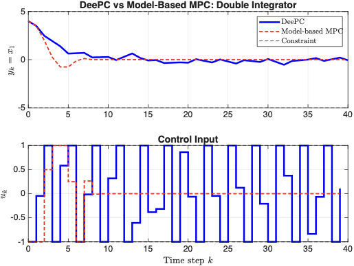
The code below implements DeePC for a scalar integrator using Hankel matrices. Modify the data length, regularisation, or noise and click Run.
# DeePC for a scalar integrator: y(k+1) = y(k) + u(k)
np.random.seed(0)
n = 1 # system order
T = 50 # data length
Tini = 1 # past horizon (>= n)
N = 5 # prediction horizon
lam_g = 1.0 # g regularisation (try 0.01, 1, 100)
lam_s = 100.0 # slack regularisation
# Collect data with PE input
u_d = np.random.randn(T) * 0.5
y_d = np.zeros(T)
for k in range(T-1):
y_d[k+1] = y_d[k] + u_d[k]
# Build Hankel matrices
L = Tini + N
cols = T - L + 1
Hu = np.zeros((L, cols))
Hy = np.zeros((L, cols))
for j in range(cols):
Hu[:, j] = u_d[j:j+L]
Hy[:, j] = y_d[j:j+L]
Up, Uf = Hu[:Tini, :], Hu[Tini:, :]
Yp, Yf = Hy[:Tini, :], Hy[Tini:, :]
print(f"Hankel matrix: {L} x {cols}, rank = {np.linalg.matrix_rank(np.vstack([Hu, Hy]))}")
# DeePC receding-horizon simulation
Q, R = 1.0, 0.1
y_ref = 0.0
y_curr = 3.0
N_sim = 15
y_log, u_log = [y_curr], []
for step in range(N_sim):
u_ini = np.array([u_log[-1]]) if u_log else np.array([0.0])
y_ini = np.array([y_curr])
H_eq = np.vstack([Up, Yp])
b_eq = np.concatenate([u_ini, y_ini])
A_ls = np.vstack([np.sqrt(Q)*Yf, np.sqrt(R)*Uf, np.sqrt(lam_g)*np.eye(cols), np.sqrt(lam_s)*H_eq])
b_ls = np.concatenate([np.sqrt(Q)*np.full(N, y_ref), np.zeros(N), np.zeros(cols), np.sqrt(lam_s)*b_eq])
g_opt = np.linalg.lstsq(A_ls, b_ls, rcond=None)[0]
u_apply = np.clip((Uf @ g_opt)[0], -1, 1)
u_log.append(u_apply)
y_curr = y_curr + u_apply
y_log.append(y_curr)
print(f"DeePC: y0={y_log[0]:.1f} -> final={y_log[-1]:.4f}")
print(f"Steps to |y|<0.1: {next((i for i,y in enumerate(y_log) if abs(y)<0.1), 'N/A')}")
Figure 1.9 illustrates the DeePC control loop. The key distinction from model-based MPC is that no system matrices appear anywhere—the Hankel matrices built from raw data serve as the prediction engine.
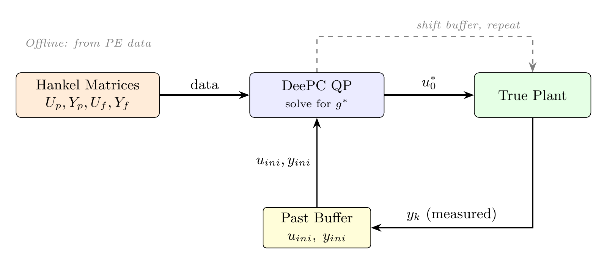
For nonlinear systems, the Fundamental Lemma does not hold—the Hankel columns span only LTI behaviours. Workarounds include short rolling data windows (re-collecting data periodically), strong regularisation (\(\lambda_g \gg 0\)), and multiple shooting with data-driven predictors.
Figure 1.10 illustrates how measurement noise degrades DeePC performance. As the noise level \(\sigma\) increases, the closed-loop trajectory degrades—highlighting the importance of regularisation (\(\lambda_g\), \(\lambda_\sigma\)) when working with noisy data.
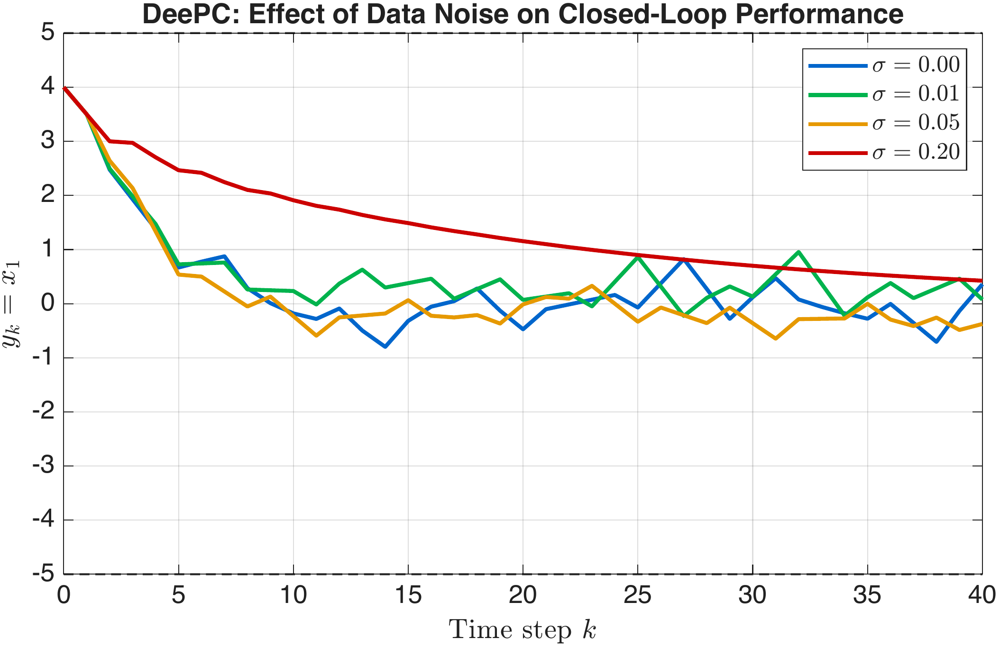
The methods above learn a model (GP-MPC, Koopman) or bypass it (DeePC) using offline data. Learning MPC (LMPC) takes a different approach: it learns from repeated executions of the same task, improving the controller with each iteration.
Definition: Iterative Task A task is iterative if the system must repeatedly drive from a fixed initial state \(x_S\) to a fixed terminal state \(x_F\), under the same dynamics \(x_{k+1} = f(x_k, u_k)\) and the same constraints \(x_k \in \mathcal{X}\), \(u_k \in \mathcal{U}\).
Motivating examples:
Autonomous racing. A car completes laps on the same track. Each lap is an iteration.
Pick-and-place robots. A robotic arm repeatedly moves objects between the same two positions.
Batch chemical processes. The same reaction is run repeatedly, aiming for a target yield.
We index iterations by \(j = 0, 1, 2, \ldots\) and time steps within an iteration by \(k = 0, 1, \ldots, T_j\), where \(T_j\) is the time at which iteration \(j\) terminates (i.e. \(x_{T_j}^{(j)} = x_F\)). The trajectory at iteration \(j\) is \(\{x_0^{(j)}, u_0^{(j)}, x_1^{(j)}, u_1^{(j)}, \ldots, x_{T_j}^{(j)}\}\).
After \(j\) successful iterations, we have \(j+1\) complete trajectories (iterations \(0, 1, \ldots, j\)) that all satisfy the constraints and reach the target. The union of every state visited during any of these iterations forms the sampled safe set: \[\begin{equation} \label{eq:safe_set} \mathcal{SS}^j = \bigcup_{i=0}^{j}\bigl\{x_0^{(i)},\; x_1^{(i)},\; \ldots,\; x_{T_i}^{(i)}\bigr\} \end{equation}\] Here \(x_k^{(i)}\) denotes the state at time step \(k\) during iteration \(i\), and \(T_i\) is the number of steps iteration \(i\) took to reach the target. The superscript \((i)\) always refers to the iteration index and the subscript to the time index within that iteration. Since every iteration reached \(x_F\) safely, every state in \(\mathcal{SS}^j\) is a state from which the target is known to be reachable without violating constraints — hence the name “safe set.” As we complete more iterations, \(\mathcal{SS}^j\) can only grow: \(\mathcal{SS}^{j} \supseteq \mathcal{SS}^{j-1}\).
For each state in \(\mathcal{SS}^j\), we can compute the cost-to-go: the total cost that was actually incurred from that state to the target during the iteration in which it was visited. If the same state \(x\) was visited during multiple iterations, we take the cheapest one: \[\begin{equation} \label{eq:cost_to_go} Q^j(x) = \min_{(i,k):\, x_k^{(i)} = x}\; \sum_{t=k}^{T_i} \ell\bigl(x_t^{(i)},\, u_t^{(i)}\bigr) \end{equation}\] The minimum is over all (iteration, time step) pairs \((i,k)\) for which the system was in state \(x\) at step \(k\) of iteration \(i\). The sum counts the stage costs from that point onwards until the end of that iteration. For example, if \(\ell = 1\) (minimum-time), then \(Q^j(x_k^{(i)}) = T_i - k\): the number of remaining steps. If the same state appeared in a later, faster iteration, \(Q^j\) takes the smaller value.
The LMPC optimisation at iteration \(j+1\) is: \[\begin{equation} \label{eq:lmpc_opt} \min_{u_0, \ldots, u_{N-1}}\; \sum_{k=0}^{N-1}\ell(x_k, u_k) + Q^j(x_N) \end{equation}\] subject to: \[\begin{align*} \text{Initialisation:} \quad & x_0 = x(t) \\ \text{Dynamics:} \quad & x_{k+1} = f(x_k, u_k) \\ \text{Constraints:} \quad & x_k \in \mathcal{X}, \quad u_k \in \mathcal{U} \\ \text{Terminal constraint:} \quad & x_N \in \text{conv}(\mathcal{SS}^j) \end{align*}\] where \(\text{conv}(\mathcal{SS}^j)\) denotes the convex hull of the sampled safe set. In practice, the terminal constraint is implemented via convex combination variables: \(x_N = \sum_{(i,k)} \lambda_k^{(i)}\,x_k^{(i)}\), with \(\lambda_k^{(i)} \ge 0\) and \(\sum \lambda = 1\). The terminal cost is interpolated accordingly: \(Q^j(x_N) = \sum \lambda_k^{(i)}\,Q^j(x_k^{(i)})\). This convex-hull relaxation is essential—constraining \(x_N\) to lie in the finite set \(\mathcal{SS}^j\) exactly would make the problem combinatorial. For linear systems, the convex hull preserves feasibility; for nonlinear systems, the safe set is used as a lookup table with nearest-neighbour matching as in the worked example below.
Connection to Terminal Sets (Chapter 7) In standard MPC, the terminal set \(\mathcal{X}_f\) and terminal cost \(V_f(x)\) are computed offline from the model (typically via the DARE and the maximal positive invariant set). In LMPC, both are built from data:
\(\mathcal{SS}^j\) plays the role of \(\mathcal{X}_f\)—it is a set of states from which the target is known to be reachable.
\(Q^j(x)\) plays the role of \(V_f(x)\)—it is a valid upper bound on the true cost-to-go.
As \(j\) grows, \(\mathcal{SS}^j\) expands and \(Q^j\) decreases, so the controller has more freedom and achieves better performance.
LMPC provides two important properties without requiring an explicit model:
Recursive feasibility. If iteration \(j\) was feasible (the system reached \(x_F\)), then iteration \(j+1\) is also feasible. The argument has two parts: (i) inter-iteration: the trajectory from iteration \(j\) is contained in \(\mathcal{SS}^j\), so it is available as a feasible candidate for iteration \(j+1\); (ii) intra-iteration: at each time step within iteration \(j+1\), the standard shifted-sequence argument applies—the tail of the previous solution provides a feasible candidate, and its terminal state remains in \(\mathcal{SS}^j\) because all successor states from previous iterations are already in the safe set.
Non-increasing cost. \(J^{(j+1)} \le J^{(j)}\). Since the previous trajectory is feasible, the optimal cost at iteration \(j+1\) is at most the cost of the previous trajectory. Strict improvement occurs when the expanded safe set opens up shorter or cheaper paths.
The cost sequence \(\{J^{(j)}\}\) is non-increasing and bounded below (by zero), so it converges. For convex problems, convergence is to the global optimum; for nonlinear systems, LMPC may converge to a local optimum depending on the initial trajectory and the horizon \(N\).
LMPC: Scalar Minimum-Time Problem System. \(x_{k+1} = x_k + u_k\), with \(|u_k| \le 0.5\).
Task. Drive from \(x_0 = 2\) to \(x_F = 0\) in minimum time (stage cost \(\ell = 1\) per step).
Iteration 0: conservative controller. Use \(u_k = -0.3\) (well within the constraint) at every step. \[\begin{array}{c|c c c c c c c c} k & 0 & 1 & 2 & 3 & 4 & 5 & 6 & 7 \\ \hline x_k^{(0)} & 2.0 & 1.7 & 1.4 & 1.1 & 0.8 & 0.5 & 0.2 & -0.1 \end{array}\] Cost: \(J^{(0)} = 7\) steps.
Build \(\mathcal{SS}^0\) and \(Q^0\). The safe set is \(\{2.0,\; 1.7,\; 1.4,\; 1.1,\; 0.8,\; 0.5,\; 0.2,\; 0\}\). The cost-to-go from each state is the number of remaining steps: \(Q^0(2.0) = 7\), \(Q^0(1.7) = 6\), …, \(Q^0(0) = 0\).
Iteration 1: LMPC. With \(N = 3\), the LMPC plans from \(x_0 = 2\) and requires \(x_3 \in \mathcal{SS}^0\). Since the constraint allows \(u = -0.5\), the optimiser can reach \(x_3 = 0.5\) in 3 steps (using \(u = -0.5\) each time). The cost-to-go from \(x_3 = 0.5\) is \(Q^0(0.5) = 2\), so the planned total cost is \(3 + 2 = 5\). This is less than \(J^{(0)} = 7\).
After completing iteration 1, the safe set \(\mathcal{SS}^1\) is expanded with the new states, and the cost-to-go \(Q^1\) is updated with the lower costs observed.
Iteration 2 and beyond. The safe set grows, the cost-to-go improves, and LMPC converges to the optimal solution: \(u_k = -0.5\) for 4 steps, reaching \(x_F = 0\) in minimum time \(T^* = 4\).
f = @(x, u) x + u;
u_max = 0.5;
x0 = 2; xF = 0;
N = 3; % MPC horizon
% 2. Iteration 0: Conservative Controller (u = -0.3)
x_traj = x0; u_traj = [];
x_cur = x0;
while abs(x_cur) > 0.02
if abs(x_cur) > 0.3
u_app = -0.3 * sign(x_cur); % conservative
else
u_app = -x_cur; % drive to zero near origin
end
u_app = max(-u_max, min(u_max, u_app));
x_cur = f(x_cur, u_app);
x_traj(end+1) = x_cur;
u_traj(end+1) = u_app;
if length(u_traj) > 50, break; end % safety limit
end
fprintf('Iteration 0: %d steps\n', length(u_traj));
% 3. Build Safe Set and Cost-to-Go
SS = x_traj; % safe set (states visited)
T0 = length(u_traj);
ctg = T0:-1:0; % cost-to-go from each state
% 4. LMPC Iterations (greedy one-step search)
n_iter = 5;
costs = zeros(1, n_iter+1);
costs(1) = T0;
for j = 1:n_iter
x_cur = x0;
x_j = x_cur; u_j = [];
while abs(x_cur) > 0.02
if abs(x_cur) <= 0.3
best_u = max(-u_max, min(u_max, -x_cur));
else
% Greedy: minimise 1 + Q(x_next) over u
best_u = -0.3*sign(x_cur); best_cost = 1e6;
u_grid = linspace(-u_max, u_max, 201);
for ii = 1:length(u_grid)
x_next = f(x_cur, u_grid(ii));
[d, idx] = min(abs(SS - x_next));
if d < 0.15
c_try = 1 + ctg(idx);
if c_try < best_cost
best_cost = c_try;
best_u = u_grid(ii);
end
end
end
end
u_j(end+1) = best_u;
x_cur = f(x_cur, best_u);
x_j(end+1) = x_cur;
if length(u_j) > 30, break; end
end
costs(j+1) = length(u_j);
% Update safe set and cost-to-go (in-place)
Tj = length(u_j);
new_ctg = Tj:-1:0;
for s = 1:length(x_j)
[d, idx] = min(abs(SS - x_j(s)));
if d < 0.02
ctg(idx) = min(ctg(idx), new_ctg(s));
else
SS(end+1) = x_j(s);
ctg(end+1) = new_ctg(s);
end
end
fprintf('Iteration %d: %d steps\n', j, length(u_j));
end
% 5. Plot Cost vs Iteration
figure; bar(0:n_iter, costs, 'FaceColor', [0.2 0.5 0.8]);
xlabel('Iteration j'); ylabel('Steps to reach x_F = 0');
title('LMPC: Cost Improvement Over Iterations'); grid on;Figure 1.11 shows the LMPC results over multiple iterations. Iteration 0 (conservative) takes 7 steps. From iteration 1 onward, the controller exploits the expanded safe set and converges to the optimal 4-step trajectory (\(u = -0.5\) at every step). The cost (right) decreases monotonically.
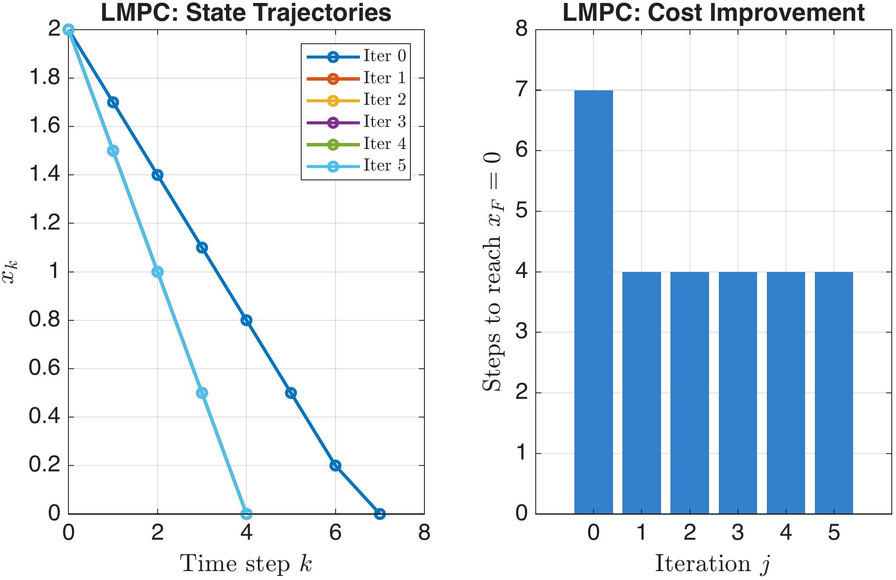
To see learning-based MPC in action, the companion Python script
lmpc_racing.py implements an NN-MPC algorithm on a
time-optimal autonomous racing problem. A vehicle modelled as a
dynamic bicycle with Pacejka Magic Formula
tyre forces learns to race faster lap by lap, using two neural networks:
an NN Speed Map that learns the optimal speed at each track position,
and an NN Value Function that learns the cost-to-go.
The state vector has six components:
\[ \mathbf{x} = \begin{bmatrix} X \\ Y \\ \varphi \\ v_x \\ v_y \\ r \end{bmatrix} \quad \text{(position, heading, body-frame velocities, yaw rate)} \]with two control inputs:
\[ \mathbf{u} = \begin{bmatrix} \delta \\ D \end{bmatrix} \quad \text{(front steering angle, throttle/brake command)} \]The continuous-time dynamics are:
\[ \begin{aligned} \dot X &= v_x \cos\varphi - v_y \sin\varphi \\ \dot Y &= v_x \sin\varphi + v_y \cos\varphi \\ \dot\varphi &= r \\ \dot v_x &= \frac{1}{m}\bigl[F_{rx} - F_{fy}\sin\delta + m\,v_y\,r - F_{\text{drag}}\bigr] \\ \dot v_y &= \frac{1}{m}\bigl[F_{ry} + F_{fy}\cos\delta - m\,v_x\,r\bigr] \\ \dot r &= \frac{1}{I_z}\bigl[F_{fy}\,l_f\cos\delta - F_{ry}\,l_r\bigr] \end{aligned} \]where the tyre forces use the Pacejka Magic Formula:
\[ \alpha_f = -\arctan\!\frac{v_y + r\,l_f}{v_x} + \delta, \qquad \alpha_r = -\arctan\!\frac{v_y - r\,l_r}{v_x} \] \[ F_{fy} = D_f \sin\!\bigl(C_f \arctan(B_f\,\alpha_f)\bigr), \qquad F_{ry} = D_r \sin\!\bigl(C_r \arctan(B_r\,\alpha_r)\bigr) \]The longitudinal driving force and drag are modelled as:
\[ F_{rx} = C_{m1}\,D - C_{m2}\,D\,v_x, \qquad F_{\text{drag}} = C_{r0} + C_{r2}\,v_x^2 \]| Parameter | Value | Unit | Description |
|---|---|---|---|
| \(m\) | 800 | kg | Vehicle mass |
| \(I_z\) | 1200 | kg·m² | Yaw inertia |
| \(l_f\) | 1.2 | m | CG to front axle |
| \(l_r\) | 1.3 | m | CG to rear axle |
| \(B_f, C_f, D_f\) | 10, 1.3, 5000 | –, –, N | Pacejka front tyre |
| \(B_r, C_r, D_r\) | 11, 1.3, 7000 | –, –, N | Pacejka rear tyre |
| \(C_{m1}, C_{m2}\) | 5000, 100 | N, N·s/m | Motor model |
| \(C_{r0}, C_{r2}\) | 50, 0.3 | N, N·s²/m² | Drag model |
| \(\delta_{\max}\) | 0.45 | rad | Max steering angle |
| \(D\) | [-1, 1] | – | Throttle/brake range |
| \(v_x\) | [0.5, 20] | m/s | Speed bounds |
The algorithm operates in an iterative learning loop: the car drives a lap, collects data, trains neural networks on that data, then uses the learned knowledge to drive the next lap faster. The diagram below shows the complete system architecture.
The first lap uses a simple pure-pursuit controller at a conservative 5 m/s. The purpose is to complete one full lap safely and collect trajectory data: at every simulation step, the state \(\mathbf{x}_k\), control input \(\mathbf{u}_k\), track position \(s_k\), and speed \(v_{x,k}\) are recorded.
This conservative first lap forms the initial safe set — the algorithm knows that these states are reachable and safe, providing a baseline for future iterations.
After each completed lap, the track is divided into \(N_{\text{bins}} = 60\) equal segments. The maximum achieved speed in each bin (across all laps so far) forms a safe set of speeds — the car knows it can at least achieve these speeds safely. The training pipeline then constructs target speeds that push beyond the proven envelope:
Mathematically, the target speed at track position \(s\) after iteration \(j\) is:
\[ v_{\text{target}}^{(j)}(s) = \min\!\Bigl( \underbrace{\max_{i \le j}\bigl\{v_x^{(i)}(s)\bigr\}}_{\text{safe set: max proven speed}} \cdot \underbrace{\beta_j}_{\text{boost}},\; \underbrace{\sqrt{\frac{a_{\text{lat,max}}}{\kappa(s)}}}_{\text{curvature cap}} \Bigr), \qquad \beta_j = \min\!\bigl(1 + 0.15\,(j+1),\; 3.0\bigr) \]The NN is an MLPRegressor(64,32) with input features
\([s/L,\;\kappa,\;\sin(2\pi s/L),\;\cos(2\pi s/L)]\).
The Fourier features (\(\sin, \cos\)) help the NN handle
the periodic (closed-loop) nature of the track, and the curvature input
\(\kappa\) lets it directly learn the relationship between
corner sharpness and safe speed.
A second neural network \(V_\theta(\mathbf{x})\) approximates the cost-to-go (remaining time steps to finish the lap) from any state:
\[ V_\theta(\mathbf{x}) \approx Q^j_k = T_j - k \]where \(T_j\) is the total steps in lap \(j\) and \(k\) is the current step. Training data from all completed laps is accumulated, so the value function learns from the entire driving history.
Features: \([X/50,\; Y/50,\; \cos\varphi,\; \sin\varphi,\; v_x/v_{\max}]\). The position is normalised by 50 m to match the track scale. Heading is encoded as \((\cos\varphi, \sin\varphi)\) to avoid the discontinuity at \(\pm\pi\).
How it is used in MPC: The controller evaluates two hypothetical states — one at the full target speed (\(x_{\text{fast}}\)) and one at 80% of target (\(x_{\text{slow}}\)). If \(V_\theta(x_{\text{fast}}) < V_\theta(x_{\text{slow}})\), the faster state leads to a quicker lap completion, so the target speed is boosted by 5%. This acts as a learned “confidence signal” that going faster here is beneficial.
At each control step (every 0.1 s), the MPC controller computes what speed the car should target and how to steer. The four sub-steps are:
There are no explicit wall constraints in the optimisation. Instead, the car is kept within the track boundaries by four complementary mechanisms, illustrated below:
The four mechanisms in detail:
 Run the demo directly in your browser — no installation required.
Run the demo directly in your browser — no installation required.
Alternatively, download
lmpc_racing.py
(requires numpy, scipy, scikit-learn,
matplotlib) and run locally:
pip install scikit-learn # if not already installed
python lmpc_racing.pyThe script produces a four-panel figure showing: (1) track with
overlaid trajectories from each iteration, (2) lap-time bar chart
showing the learning curve (typically ~50% improvement), (3) actual speed
profiles illustrating increasing cornering speeds, and (4) the NN
speed map evolution showing learned target speeds at each track position.
Students can modify the USER SETTINGS section at the top of
the file to experiment with:
TRACK_CHOICE — "custom",
"mpcc_center", or "mpcc_racing"SPEED_BOOST — how aggressively the speed increases
each iteration (default 0.15)A_LAT_MAX — curvature speed limit parameter
(higher = faster corners)NN_SPEED_LAYERS — hidden layer sizes of the speed
map neural networkN_ITERATIONS — number of learning iterationsThree tracks are included: a custom 13-waypoint circuit and two benchmark tracks from the MPCC project.
A feedforward neural network can approximate any continuous function to arbitrary accuracy, given enough neurons. This makes it a natural candidate for learning unknown dynamics \(x_{k+1} = f_\theta(x_k, u_k)\), where \(\theta\) denotes the network weights.
Training is standard: given trajectory data \(\{(x_k, u_k, x_{k+1})\}\), minimise the prediction error: \[\min_\theta \sum_{k} \|x_{k+1} - f_\theta(x_k, u_k)\|^2\] using gradient descent (backpropagation). After training, \(f_\theta\) is embedded in the MPC as the prediction model.
Convexity Structure of Learning-Based MPC A key practical distinction among the methods in this chapter is whether the resulting online optimisation is a convex QP or a non-convex NLP:
Koopman MPC is a linear MPC in the lifted coordinates. The dynamics \(z_{k+1} = A_K z_k + B_K u_k\) are linear, the cost is quadratic, and the constraints are linear in the lifted state. The nonlinear lifting \(\Psi(x)\) is evaluated only once at the measured state to form the initial condition \(z_0 = \Psi(x(t))\)—a fixed parameter, not a decision variable. The result is a standard QP.
DeePC is also a linear MPC: the Hankel-matrix
constraint is linear in the decision variable \(g\), the cost is quadratic, and the \(\|\sigma_y\|_2^2\) slack penalty is
quadratic. The \(\ell_1\)
regularisation \(\|g\|_1\) is handled
by introducing auxiliary variables and linear constraints, so YALMIP
reformulates the entire problem as a QP solvable by
quadprog.
GP-MPC is an NLP. The GP mean \(\mu_g(x_k, u_k)\) and variance \(\sigma_g^2(x_k, u_k)\) are nonlinear functions of the predicted states, which are decision variables. A common approximation is to evaluate the GP at the current nominal trajectory (not the optimised one) and solve a single QP—this is a successive linearisation, not an exact solution.
NN-MPC is also an NLP, and typically the most difficult one: neural network activation functions (ReLU, tanh) create a non-smooth, multi-modal landscape with many local minima. A general NLP solver (e.g. IPOPT via CasADi) is required.
In short: Koopman MPC and DeePC preserve the QP structure of standard linear MPC. GP-MPC and NN-MPC do not.
Practical workarounds include:
Linearise the NN at each time step (similar to the Real-Time Iteration scheme in Chapter 10), producing a time-varying QP.
Use the NN for warm-starting: compute an initial guess with the NN, then refine with a simpler model-based MPC.
Approximate the MPC policy: train a NN to clone the MPC controller’s input–output map \(\pi_\theta(x) \approx u_0^*(x)\), eliminating the online optimisation entirely.
The following code demonstrates learning a scalar dynamics model with a simple NN and comparing its predictions to the GP from Section 1.2.4.
rng(0);
T_data = 50;
x_nn = zeros(T_data+1, 1);
u_nn = 2*rand(T_data, 1) - 1;
for k = 1:T_data
x_nn(k+1) = x_nn(k) + u_nn(k) - 0.2*x_nn(k)^3;
end
X_in = [x_nn(1:T_data), u_nn]; % inputs: [x_k, u_k]
Y_out = x_nn(2:T_data+1); % targets: x_{k+1}
% 2. Train a Simple NN (1 hidden layer, 20 neurons)
net = fitnet(20, 'trainlm');
net.trainParam.showWindow = false;
net = train(net, X_in', Y_out');
% 3. Compare Predictions (u = 0)
x_test = linspace(-3, 3, 100);
y_true = x_test + 0 - 0.2*x_test.^3;
y_nn = net([x_test; zeros(1,100)]);
figure; plot(x_test, y_true, 'r-', 'LineWidth', 2); hold on;
plot(x_test, y_nn, 'b--', 'LineWidth', 2);
xlabel('x_k'); ylabel('x_{k+1}');
legend('True dynamics', 'NN prediction');
title('Neural Network One-Step Prediction (u = 0)'); grid on;Figure 1.12 shows the NN one-step prediction. The NN (blue dashed) captures the nonlinear dynamics well within the training range, though unlike the GP it provides no confidence measure.
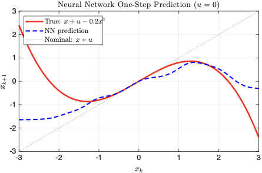
Reinforcement learning (RL) and MPC solve closely related problems: both seek a policy \(\pi(x)\) that minimises cumulative cost (or maximises cumulative reward) over time. The difference is in what is assumed known.
MPC \(\leftrightarrow\) RL Correspondences
| MPC concept | RL concept |
|---|---|
| Stage cost \(\ell(x_k, u_k)\) | Negative reward \(-r(s_k, a_k)\) |
| Terminal cost \(V_f(x_N)\) | Value function \(V(s)\) |
| Model \(x_{k+1} = f(x_k, u_k)\) | Transition model \(P(s'|s, a)\) |
| Prediction horizon \(N\) | Discount factor \(\gamma\) (conceptually) |
| Receding horizon | Model-based replanning |
Three productive ways to combine RL and MPC:
1. MPC as a structured policy in RL. Rather than learning a policy from scratch (a neural network mapping states to actions), use the MPC controller \(\pi_\text{MPC}(x) = u_0^*(x)\) as the policy. The MPC structure provides constraint satisfaction and stability by construction—RL then tunes the MPC parameters (\(Q\), \(R\), \(N\), or the model itself) to maximise long-term performance.
2. RL for MPC tuning. The cost matrices \(Q\) and \(R\) are typically hand-tuned. RL can automate this: treat \(Q\) and \(R\) as the “action” of an outer-loop agent, evaluate the resulting MPC performance over a simulation episode, and update \(Q\) and \(R\) via policy gradient or Bayesian optimisation.
3. MPC as a safe exploration policy. During RL training, the agent must explore, which can lead to constraint violations. By using MPC with conservative constraints as the exploration policy, the system remains safe while the RL agent collects data to improve its value function.
A = 1; B = 1; Q = 1; N = 5; x0 = 3; T_ep = 20;
f = @(x, u) A*x + B*u;
% 2. Evaluate one episode with given R
run_episode = @(R_val) eval_mpc(A, B, Q, R_val, N, x0, T_ep);
% 3. Grid Search (simple RL: evaluate cost for each R)
R_grid = logspace(-2, 1, 30);
J_grid = zeros(size(R_grid));
for i = 1:length(R_grid)
J_grid(i) = run_episode(R_grid(i));
end
[J_best, idx] = min(J_grid);
fprintf('Best R = %.3f, Cost = %.2f\n', R_grid(idx), J_best);
figure; semilogx(R_grid, J_grid, 'b-o', 'LineWidth', 2);
xlabel('R (control weight)'); ylabel('Episode cost J');
title('RL-Style Tuning of MPC Weight R'); grid on;
% --- Helper function ---
function J = eval_mpc(A, B, Q, R, N, x0, T_ep)
P = dare(A, B, Q, R);
x = x0; J = 0;
for t = 1:T_ep
% Simple unconstrained MPC (LQR) for speed
K = (R + B'*P*B) \ (B'*P*A);
u = -K * x;
J = J + Q*x^2 + R*u^2;
x = A*x + B*u;
end
J = J + x'*P*x;
endThe choice of method depends on the application context. The decision flowchart in Figure 1.13 provides a practical guide, and the following questions summarise the logic.
Comparison of Learning-Based MPC Methods
| GP-MPC | Koopman | DeePC | LMPC | NN-MPC | |
|---|---|---|---|---|---|
| Nominal model needed? | Yes | No | No | Yes | No |
| System class | Nonlinear | Mildly NL | LTI | Any | Nonlinear |
| Online computation | NLP (mild) | QP | QP | QP/NLP | NLP (severe) |
| Uncertainty quantified? | Yes | No | Indirectly | No | No |
| Guarantees | Chance (1-step) | Approx. linear | LTI equiv. | Recur. feas. | Weak |
| YALMIP usable? | Yes | Yes | Yes | Yes | No |
Assumptions and Limitations Every learning-based method introduces assumptions beyond those of standard MPC:
GP-MPC assumes the residual is a smooth function (kernel choice).
Koopman MPC assumes the dictionary spans the relevant observables.
DeePC assumes LTI dynamics (or mild nonlinearity with regularisation).
LMPC assumes the task is repetitive with fixed initial and terminal conditions.
NN-MPC provides no formal constraint or stability guarantees.
The choice of method must be guided by the problem structure, the available data, and the required guarantees.
Chapter Summary This chapter introduced five methods for combining learning with MPC:
GP-MPC: learns a probabilistic residual model; provides adaptive constraint tightening via chance constraints.
Koopman MPC: lifts nonlinear dynamics to a linear space via a data-driven dictionary; reduces to a standard QP.
DeePC: uses raw input–output data in a Hankel-matrix formulation; bypasses system identification entirely.
LMPC: exploits data from repeated task executions to expand the safe set and improve performance.
NN-MPC: uses neural networks for dynamics learning; expressive but non-convex and harder to certify.
The key trade-off is between expressiveness and tractability. Koopman MPC and DeePC preserve the QP structure of standard linear MPC, making them directly suitable for real-time implementation with existing solvers. GP-MPC is an NLP but admits effective convex approximations. NN-MPC is the most expressive but also the least tractable, producing non-convex NLPs with limited formal guarantees.
Willems, Rapisarda, Markovsky & De Moor (2005): the Fundamental Lemma .
Rasmussen & Williams (2006): the standard textbook on Gaussian processes .
Hewing, Wabersich, Menner & Zeilinger (2020): a survey of learning-based MPC .
Coulson, Lygeros & Dörfler (2019): the original DeePC paper .
Rosolia & Borrelli (2018): Learning MPC for iterative tasks .
Korda & Mezić (2018): Koopman-based linear predictors for nonlinear MPC .
Dörfler, Coulson & Markovsky (2023): bridging data-driven and model-based control via regularisation .
GP Regression (hand-worked).
Given 4 training points \(\{(0, 0.1),\; (1, 0.9),\; (2, 0.15),\; (3, -0.8)\}\) and the SE kernel with \(\sigma_f = 1\), \(\ell = 1.5\), \(\sigma_n = 0.1\), compute the \(4 \times 4\) Gram matrix \(K\).
Compute the predictive mean \(\mu_*\) and variance \(\sigma_*^2\) at \(x_* = 1.5\).
If this GP models a dynamics residual and the state constraint is \(|x| \le 5\), compute the tightened constraint at \(x_* = 1.5\) for \(\delta = 0.025\) (i.e. a 97.5% chance constraint).
Discuss qualitatively: what happens to \(\sigma_*^2\) as the number of training points near \(x_*\) increases?
EDMD Identification (hand-worked).
For \(x_{k+1} = 0.5\,x_k + 0.2\,x_k^2 + u_k\) with dictionary \(\Psi(x) = [x,\; x^2]^\top\), generate 6 transitions from \(x_0 = 0\) with inputs \(u = [0.5,\; -0.3,\; 0.8,\; -0.5,\; 0.1,\; -0.2]\).
Construct the lifted data matrices \(Z\), \(Z'\), \(U\) and solve for \([A_K,\; B_K]\) via the pseudoinverse.
Compare the one-step prediction error of the Koopman model to that of a linearisation about the origin (\(x_{k+1} \approx 0.5\,x_k + u_k\)) at the test point \(x = 2\), \(u = 0\).
DeePC: Hankel Matrix Construction.
For the first-order system \(y_{k+1} = 0.9\,y_k + u_k\) with \(T = 10\) data points and \(L = 4\), construct the Hankel matrices \(\mathcal{H}_4(u^d)\) and \(\mathcal{H}_4(y^d)\).
Verify the rank condition for PE of order \(L + n = 5\).
Write out the DeePC QP [eq:deepc_qp] explicitly (decision variables, cost, constraints) for \(T_\text{ini} = 1\), \(N = 3\).
Compute the minimum data length \(T\) required for PE with system orders \(n = 1, 2, 4\) and input dimension \(m = 1\), assuming \(L = 12\).
DeePC vs Model-Based MPC (MATLAB).
Implement DeePC for the double integrator (Section 1.4.5) using the code provided.
Implement standard model-based MPC (Chapter 7 formulation) for the same system with the same cost matrices and constraints.
Compare the closed-loop trajectories. Are they identical? Explain.
Corrupt the data with additive noise: \(u_k^d \leftarrow u_k^d + \varepsilon_k\), \(y_k^d \leftarrow y_k^d + \eta_k\), with \(\varepsilon_k, \eta_k \sim \mathcal{N}(0, \sigma^2)\) for \(\sigma \in \{0.01,\; 0.1,\; 0.5\}\). How does DeePC performance degrade? How do the regularisation parameters \(\lambda_g\) and \(\lambda_\sigma\) help?
LMPC (scalar computation).
For \(x_{k+1} = x_k + u_k\), \(|u_k| \le 1\), \(x_0 = 3\), \(x_F = 0\), with stage cost \(\ell = 1\): compute the trajectory for iteration 0 using \(u_k = -0.5\) at every step.
Construct the safe set \(\mathcal{SS}^0\) and the cost-to-go \(Q^0(x)\) for each state in the trajectory.
With \(N = 2\), show that iteration 1 can achieve \(u_k = -1\) (i.e. saturated input) and reach the origin faster. Compute the cost \(J^{(1)}\).
What is the theoretical minimum cost (minimum number of steps)? How many LMPC iterations are needed to achieve it?
Method Selection (conceptual). For each scenario, argue which learning-based MPC approach is most appropriate and explain your reasoning:
A chemical reactor with well-understood reaction kinetics but unknown and time-varying heat loss to the environment.
An autonomous car performing laps on a race circuit, where the track layout is fixed but tyre grip varies with temperature.
A power electronics converter whose input–output behaviour has been measured extensively, and the internal dynamics are believed to be linear.
A soft robotic arm with complex, highly nonlinear dynamics that are difficult to model from first principles.